SD5979 / 原课件 · 中英对照
L05 · 逐页中英对照讲义
05 Σ SD5979 Behav&Physio 2026 10 02.pdf · 共 103 页 · 左侧保留老师英文原图与原版式，右侧逐页中文对照，研究课相关词汇已加粗高亮并括号标注原英语。

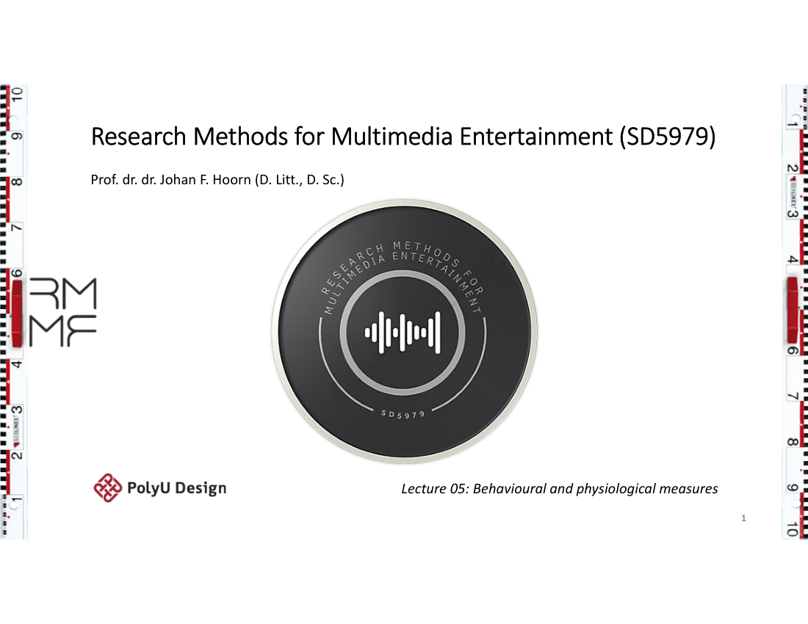
多媒体娱乐研究方法（Research Methods）（SD5979）
Prof. dr. dr. Johan F. Hoorn (D. Litt., D. Sc.)
第 05 讲：行为与生理测量（Behavioural and physiological measures）
英文检索原文（公式与版式请看左侧原图）
Research Methods for Multimedia Entertainment (SD5979) Prof. dr. dr. Johan F. Hoorn (D. Litt., D. Sc.) Lecture 05: Behavioural and physiological measures 1

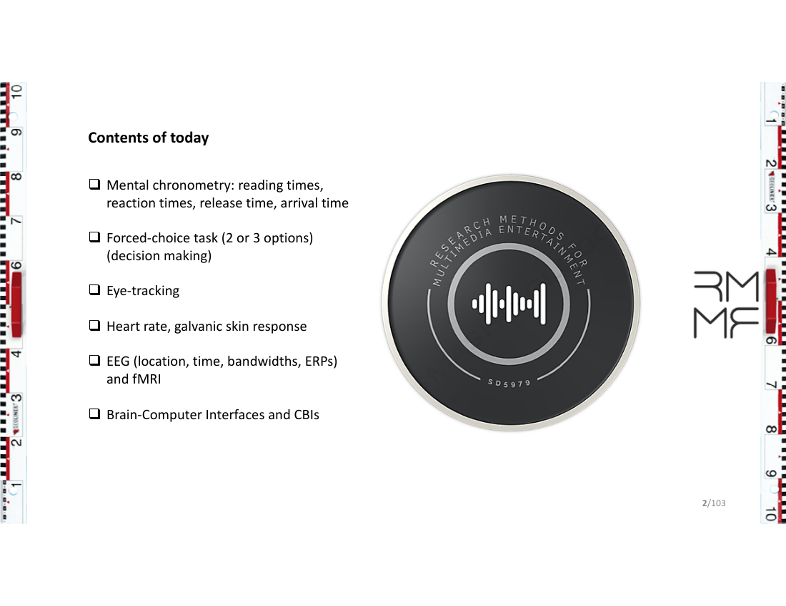
今日内容（Contents of today）
- 心理计时法（Mental chronometry）：阅读时间（reading times）、反应时间（reaction times）、释放时间（release time）、到达时间（arrival time）
- 强制选择任务（Forced-choice task）（2 或 3 个选项）（决策（decision making））
- 眼动追踪（Eye-tracking）
- 心率（Heart rate）、皮肤电反应（galvanic skin response）
- 脑电图（EEG）（位置、时间、频带（bandwidths）、事件相关电位（ERPs））与 功能性磁共振成像（fMRI）
- 脑机接口（Brain-Computer Interfaces）与 CBIs
英文检索原文（公式与版式请看左侧原图）
Contents of today Mental chronometry: reading times, reaction times, release time, arrival time Forced-choice task (2 or 3 options) (decision making) Eye-tracking Heart rate, galvanic skin response EEG (location, time, bandwidths, ERPs) and fMRI Brain-Computer Interfaces and CBIs 2/103

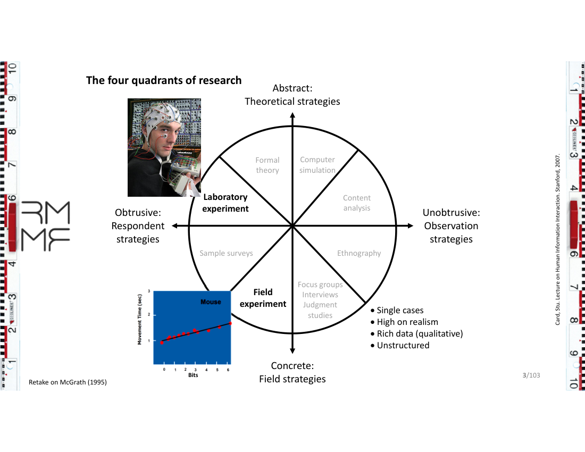
研究的四个象限（The four quadrants of research）
- 具体（Concrete）：实地策略（Field strategies）
- 抽象（Abstract）：理论策略（Theoretical strategies）
- 介入性（Obtrusive）：受访者策略（Respondent strategies）
- 非介入性（Unobtrusive）：观察策略（Observation strategies）
象限中的具体方法
- 实验室实验（Laboratory experiment）
- 抽样调查（Sample surveys）
- 形式理论（Formal theory）
- 计算机模拟（Computer simulation）
- 民族志（Ethnography）
- 个案（Single cases）
- 高现实性（realism）（High on realism）
- 丰富数据（质性（qualitative））
- 非结构化（Unstructured）
- 内容分析（Content analysis）
- 实地实验（Field experiment）
- 焦点小组（Focus groups）
- 访谈（Interviews）
- 判断研究（Judgment studies）
改编自 McGrath（1995）（Retake on McGrath (1995)）
Card, Stu. Lecture on Human Information Interaction. Stanford, 2007.
Bits
英文检索原文（公式与版式请看左侧原图）
The four quadrants of research Concrete: Field strategies Abstract: Theoretical strategies Laboratory experiment Sample surveys Obtrusive: Respondent strategies Unobtrusive: Observation strategies Formal theory Computer simulation Ethnography Content analysis Field experiment Focus groups Interviews Judgment studies Single cases High on realism Rich data (qualitative) Unstructured Retake on McGrath (1995) Card, Stu. Lecture on Human Information Interaction. Stanford, 2007. Bits 3/103

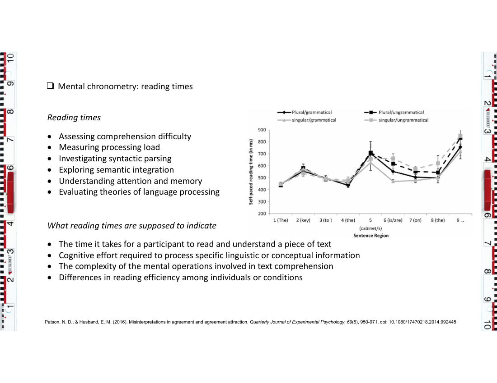
心理计时法（Mental chronometry）：阅读时间（reading times）
阅读时间（Reading times）
- 评估理解难度
- 测量加工负荷（processing load）
- 研究句法解析（syntactic parsing）
- 探索语义整合（semantic integration）
- 理解注意（attention）与记忆（memory）
- 评估语言加工（language processing）理论
阅读时间（Reading times）理应指示的内容（What reading times are supposed to indicate）
- 被试（participant）阅读并理解一段文本所花费的时间
- 加工特定语言或概念信息所需的认知努力（Cognitive effort）
- 文本理解中所涉及的心理操作（mental operations）的复杂度
- 不同个体或不同实验条件（conditions）下阅读效率的差异
Patson, N. D., & Husband, E. M. (2016). Misinterpretations in agreement and agreement attraction. Quarterly Journal of Experimental Psychology, 69(5), 950-971. doi: 10.1080/17470218.2014.992445
英文检索原文（公式与版式请看左侧原图）
Mental chronometry: reading times Reading times Assessing comprehension difficulty Measuring processing load Investigating syntactic parsing Exploring semantic integration Understanding attention and memory Evaluating theories of language processing What reading times are supposed to indicate The time it takes for a participant to read and understand a piece of text Cognitive effort required to process specific linguistic or conceptual information The complexity of the mental operations involved in text comprehension Differences in reading efficiency among individuals or conditions Patson, N. D., & Husband, E. M. (2016). Misinterpretations in agreement and agreement attraction. Quarterly Journal of Experimental Psychology, 69(5), 950-971. doi: 10.1080/17470218.2014.992445

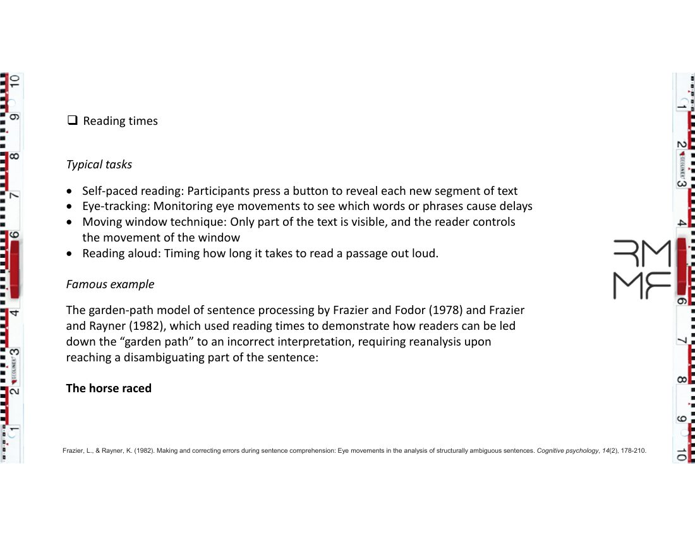
阅读时间（Reading times）
典型任务（Typical tasks）
- 自定步速阅读（Self-paced reading）：被试（Participants）按下按钮以逐段显示文本的每一新片段
- 眼动追踪（Eye-tracking）：监测眼球运动，以查看哪些词或短语导致延迟
- 移动窗口技术（Moving window technique）：仅部分文本可见，读者控制窗口的移动
- 朗读（Reading aloud）：计时大声朗读一段文章所需的时间。
著名示例（Famous example）
Frazier 和 Fodor（1978）以及 Frazier 和 Rayner（1982）提出的句子加工花园路径模型（garden-path model），该模型利用阅读时间（reading times）来证明读者如何可能被引入“花园路径”而产生错误解读，并在读到句子中消除歧义的部分时需要进行重新分析：
The horse raced（那匹马跑了／被驱策……）
Frazier, L., & Rayner, K. (1982). Making and correcting errors during sentence comprehension: Eye movements in the analysis of structurally ambiguous sentences. Cognitive psychology, 14(2), 178-210.
英文检索原文（公式与版式请看左侧原图）
Reading times Typical tasks Self-paced reading: Participants press a button to reveal each new segment of text Eye-tracking: Monitoring eye movements to see which words or phrases cause delays Moving window technique: Only part of the text is visible, and the reader controls the movement of the window Reading aloud: Timing how long it takes to read a passage out loud. Famous example The garden-path model of sentence processing by Frazier and Fodor (1978) and Frazier and Rayner (1982), which used reading times to demonstrate how readers can be led down the “garden path” to an incorrect interpretation, requiring reanalysis upon reaching a disambiguating part of the sentence: The horse raced Frazier, L., & Rayner, K. (1982). Making and correcting errors during sentence comprehension: Eye movements in the analysis of structurally ambiguous sentences. Cognitive psychology, 14(2), 178-210.

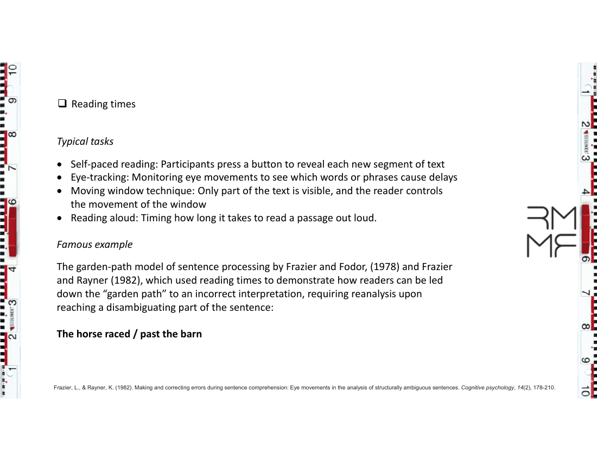
阅读时间（Reading times）
典型任务（Typical tasks）
- 自定步速阅读（Self-paced reading）：被试（Participants）按下按钮以逐段显示文本的每一新片段
- 眼动追踪（Eye-tracking）：监测眼球运动，以查看哪些词或短语导致延迟
- 移动窗口技术（Moving window technique）：仅部分文本可见，读者控制窗口的移动
- 朗读（Reading aloud）：计时大声朗读一段文章所需的时间。
著名示例（Famous example）
Frazier 和 Fodor（1978）以及 Frazier 和 Rayner（1982）提出的句子加工花园路径模型（garden-path model），该模型利用阅读时间（reading times）来证明读者如何可能被引入“花园路径”而产生错误解读，并在读到句子中消除歧义的部分时需要进行重新分析：
The horse raced / past the barn（那匹马跑过／被驱策经过谷仓……）
Frazier, L., & Rayner, K. (1982). Making and correcting errors during sentence comprehension: Eye movements in the analysis of structurally ambiguous sentences. Cognitive psychology, 14(2), 178-210.
英文检索原文（公式与版式请看左侧原图）
Typical tasks Self-paced reading: Participants press a button to reveal each new segment of text Eye-tracking: Monitoring eye movements to see which words or phrases cause delays Moving window technique: Only part of the text is visible, and the reader controls the movement of the window Reading aloud: Timing how long it takes to read a passage out loud. Famous example The garden-path model of sentence processing by Frazier and Fodor, (1978) and Frazier and Rayner (1982), which used reading times to demonstrate how readers can be led down the “garden path” to an incorrect interpretation, requiring reanalysis upon reaching a disambiguating part of the sentence: The horse raced / past the barn Frazier, L., & Rayner, K. (1982). Making and correcting errors during sentence comprehension: Eye movements in the analysis of structurally ambiguous sentences. Cognitive psychology, 14(2), 178-210. Reading times

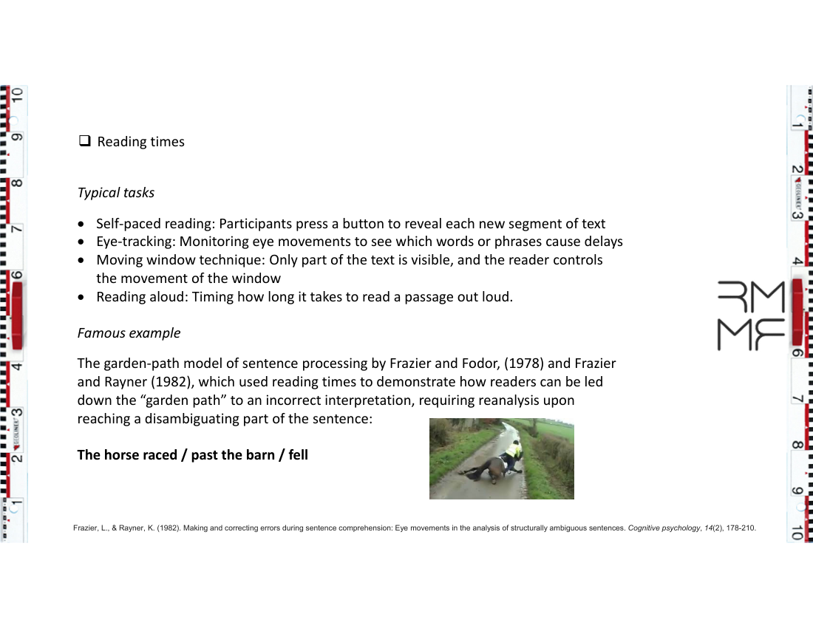
阅读时间（Reading times）
典型任务（Typical tasks）
- 自定步速阅读（Self-paced reading）：被试（Participants）按下按钮以逐段显示文本的每一新片段
- 眼动追踪（Eye-tracking）：监测眼球运动，以查看哪些词或短语导致延迟
- 移动窗口技术（Moving window technique）：仅部分文本可见，读者控制窗口的移动
- 朗读（Reading aloud）：计时大声朗读一段文章所需的时间。
著名示例（Famous example）
Frazier 和 Fodor（1978）以及 Frazier 和 Rayner（1982）提出的句子加工花园路径模型（garden-path model），该模型利用阅读时间（reading times）来证明读者如何可能被引入“花园路径”而产生错误解读，并在读到句子中消除歧义的部分时需要进行重新分析：
The horse raced / past the barn / fell（那匹被驱策经过谷仓的马摔倒了）
Frazier, L., & Rayner, K. (1982). Making and correcting errors during sentence comprehension: Eye movements in the analysis of structurally ambiguous sentences. Cognitive psychology, 14(2), 178-210.
英文检索原文（公式与版式请看左侧原图）
Typical tasks Self-paced reading: Participants press a button to reveal each new segment of text Eye-tracking: Monitoring eye movements to see which words or phrases cause delays Moving window technique: Only part of the text is visible, and the reader controls the movement of the window Reading aloud: Timing how long it takes to read a passage out loud. Famous example The garden-path model of sentence processing by Frazier and Fodor, (1978) and Frazier and Rayner (1982), which used reading times to demonstrate how readers can be led down the “garden path” to an incorrect interpretation, requiring reanalysis upon reaching a disambiguating part of the sentence: The horse raced / past the barn / fell Frazier, L., & Rayner, K. (1982). Making and correcting errors during sentence comprehension: Eye movements in the analysis of structurally ambiguous sentences. Cognitive psychology, 14(2), 178-210. Reading times

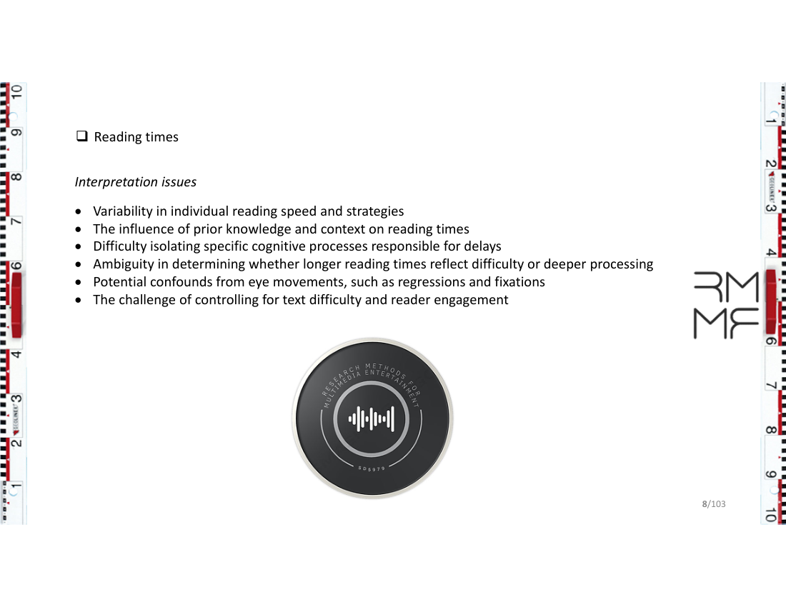
阅读时间（Reading times）：解释上的问题（Interpretation issues）
- 个体阅读速度与策略的变异性（Variability）
- 先验知识（prior knowledge）和语境对阅读时间（reading times）的影响
- 难以分离出导致延迟的具体认知过程（cognitive processes）
- 无法明确判断更长的阅读时间（reading times）究竟反映的是理解困难还是更深层的加工
- 来自眼球运动的潜在混淆因素（confounds），例如回视（regressions）与注视（fixations）
- 控制文本难度与读者投入度的挑战
英文检索原文（公式与版式请看左侧原图）
Interpretation issues Variability in individual reading speed and strategies The influence of prior knowledge and context on reading times Difficulty isolating specific cognitive processes responsible for delays Ambiguity in determining whether longer reading times reflect difficulty or deeper processing Potential confounds from eye movements, such as regressions and fixations The challenge of controlling for text difficulty and reader engagement Reading times 8/103

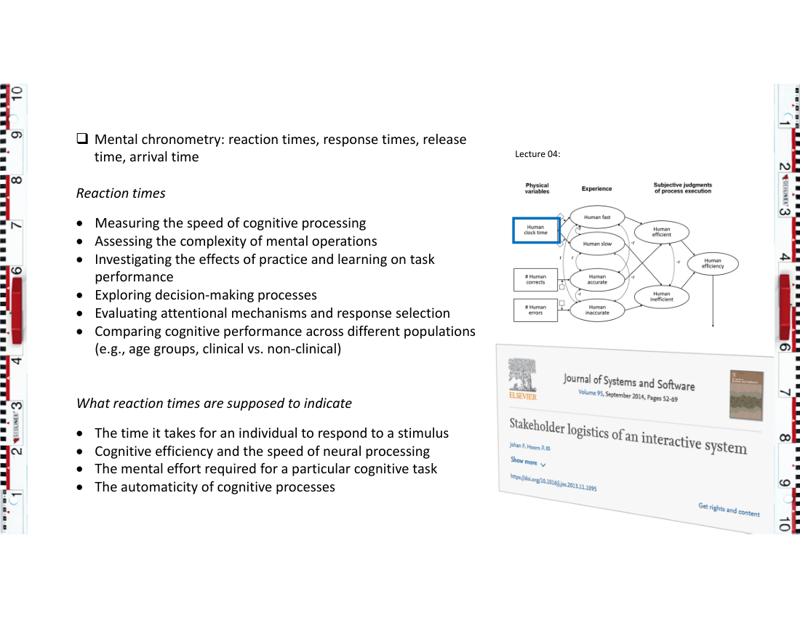
心理计时法（Mental chronometry）：反应时间（reaction times）、响应时间（response times）、释放时间（release time）、到达时间（arrival time）
反应时间（Reaction times）
- 测量认知加工（cognitive processing）的速度
- 评估心理操作（mental operations）的复杂度
- 研究练习与学习对任务表现的影响
- 探索决策（decision-making）过程
- 评估注意机制（attentional mechanisms）与反应选择（response selection）
- 比较不同人群之间的认知表现（例如：年龄组、临床群体（clinical） vs. 非临床群体（non-clinical））
反应时间（Reaction times）理应指示的内容（What reaction times are supposed to indicate）
- 个体对某一刺激（stimulus）做出反应所需的时间
- 认知效率（Cognitive efficiency）与神经加工（neural processing）的速度
- 特定认知任务（cognitive task）所需的心理努力
- 认知过程（cognitive processes）的自动化（automaticity）
Lecture 04:
英文检索原文（公式与版式请看左侧原图）
Mental chronometry: reaction times, response times, release time, arrival time Reaction times Measuring the speed of cognitive processing Assessing the complexity of mental operations Investigating the effects of practice and learning on task performance Exploring decision-making processes Evaluating attentional mechanisms and response selection Comparing cognitive performance across different populations (e.g., age groups, clinical vs. non-clinical) What reaction times are supposed to indicate The time it takes for an individual to respond to a stimulus Cognitive efficiency and the speed of neural processing The mental effort required for a particular cognitive task The automaticity of cognitive processes Lecture 04:

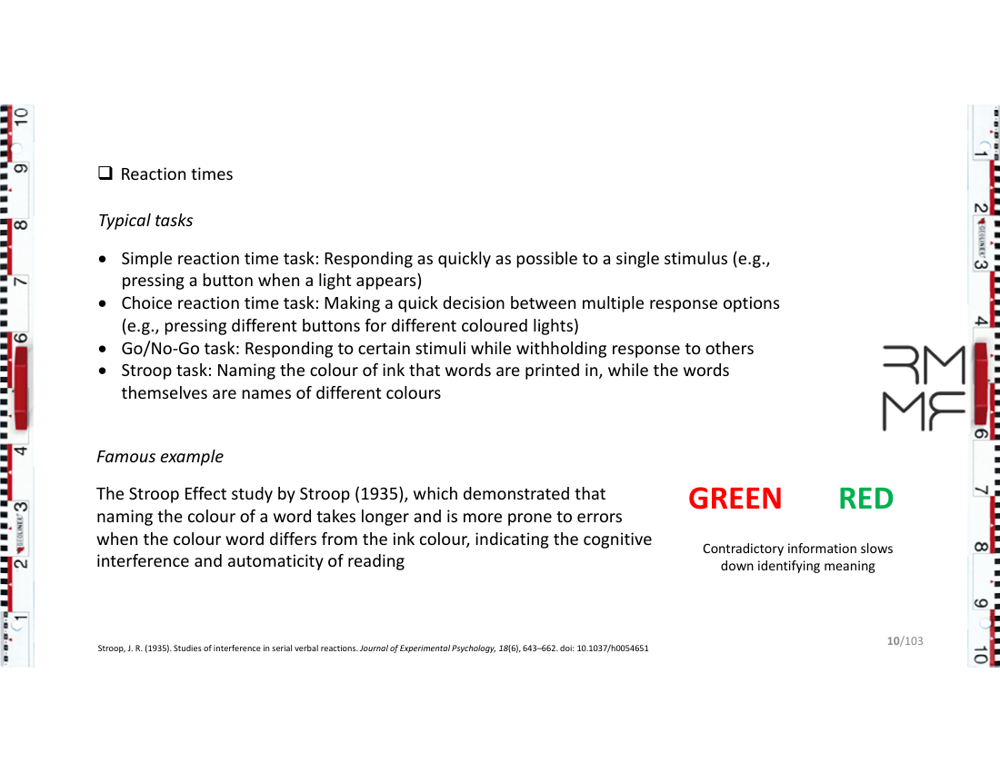
反应时间（Reaction times）
典型任务（Typical tasks）
- 简单反应时任务（Simple reaction time task）：对单一刺激（stimulus）尽可能快地做出反应（例如：灯光出现时按下按钮）
- 选择反应时任务（Choice reaction time task）：在多个反应选项之间快速做出决策（例如：针对不同颜色的灯光按下不同的按钮）
- Go/No-Go 任务（Go/No-Go task）：对某些刺激（stimuli）做出反应，同时对另一些刺激抑制反应
- 斯特鲁普任务（Stroop task）：说出印刷词语的墨水颜色，而这些词语本身是不同颜色的名称
著名示例（Famous example）
Stroop（1935）的斯特鲁普效应（Stroop Effect）研究证明，当颜色词与墨水颜色不一致时，命名词语的颜色需要更长时间且更容易出错，这表明了认知干扰（cognitive interference）以及阅读的自动化（automaticity）
- 示例图示：GREEN / RED — 相互矛盾的信息会减慢对意义的识别（Contradictory information slows down identifying meaning）
Stroop, J. R. (1935). Studies of interference in serial verbal reactions. Journal of Experimental Psychology, 18(6), 643–662. doi: 10.1037/h0054651
英文检索原文（公式与版式请看左侧原图）
Famous example The Stroop Effect study by Stroop (1935), which demonstrated that naming the colour of a word takes longer and is more prone to errors when the colour word differs from the ink colour, indicating the cognitive interference and automaticity of reading Reaction times GREEN RED Contradictory information slows down identifying meaning Stroop, J. R. (1935). Studies of interference in serial verbal reactions. Journal of Experimental Psychology, 18(6), 643–662. doi: 10.1037/h0054651 Typical tasks Simple reaction time task: Responding as quickly as possible to a single stimulus (e.g., pressing a button when a light appears) Choice reaction time task: Making a quick decision between multiple response options (e.g., pressing different buttons for different coloured lights) Go/No-Go task: Responding to certain stimuli while withholding response to others Stroop task: Naming the colour of ink that words are printed in, while the words themselves are names of different colours 10/103

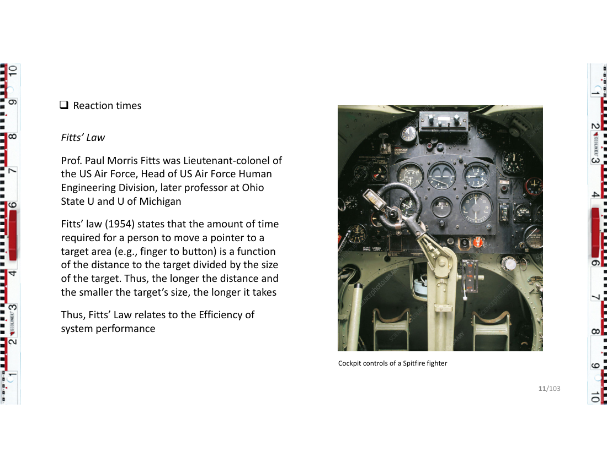
反应时（Reaction times）：菲茨定律（Fitts’ Law）
喷火式战斗机（Spitfire）的驾驶舱操纵装置
- Prof. Paul Morris Fitts 曾任美国空军中校（Lieutenant-colonel）、美国空军人因工程（Human Engineering）学部主任，后任俄亥俄州立大学（Ohio State U）和密歇根大学（U of Michigan）教授
- 菲茨定律（Fitts’ law）（1954）指出：一个人将指针移动到目标区域（例如手指移向按钮）所需的时间，是到目标的距离除以目标大小的函数（function）。因此，距离越长、目标尺寸越小，所需时间就越长
- 因此，菲茨定律（Fitts’ Law）与系统绩效（system performance）的效率（Efficiency）有关
英文检索原文（公式与版式请看左侧原图）
Cockpit controls of a Spitfire fighter Reaction times Fitts’ Law Prof. Paul Morris Fitts was Lieutenant-colonel of the US Air Force, Head of US Air Force Human Engineering Division, later professor at Ohio State U and U of Michigan Fitts’ law (1954) states that the amount of time required for a person to move a pointer to a target area (e.g., finger to button) is a function of the distance to the target divided by the size of the target. Thus, the longer the distance and the smaller the target’s size, the longer it takes Thus, Fitts’ Law relates to the Efficiency of system performance 11/103

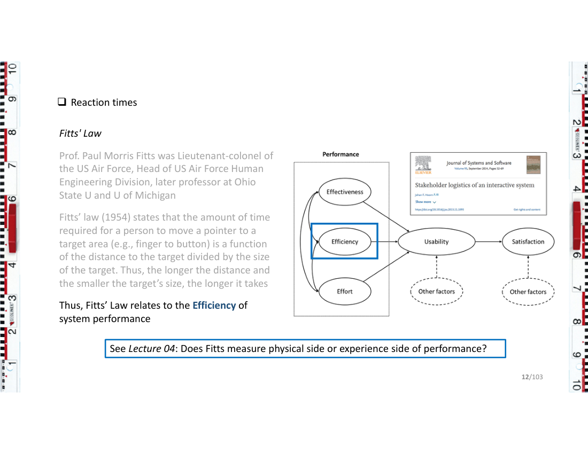
反应时（Reaction times）：菲茨定律（Fitts' Law）
- Prof. Paul Morris Fitts 曾任美国空军中校（Lieutenant-colonel）、美国空军人因工程（Human Engineering）学部主任，后任俄亥俄州立大学（Ohio State U）和密歇根大学（U of Michigan）教授
- 菲茨定律（Fitts’ law）（1954）指出：一个人将指针移动到目标区域（例如手指移向按钮）所需的时间，是到目标的距离除以目标大小的函数（function）。因此，距离越长、目标尺寸越小，所需时间就越长
- 因此，菲茨定律（Fitts’ Law）与系统绩效（system performance）的效率（Efficiency）有关
参见第 04 讲（Lecture 04）：Fitts 测量的是绩效的物理层面还是体验层面？
英文检索原文（公式与版式请看左侧原图）
Fitts' Law Prof. Paul Morris Fitts was Lieutenant-colonel of the US Air Force, Head of US Air Force Human Engineering Division, later professor at Ohio State U and U of Michigan Fitts’ law (1954) states that the amount of time required for a person to move a pointer to a target area (e.g., finger to button) is a function of the distance to the target divided by the size of the target. Thus, the longer the distance and the smaller the target’s size, the longer it takes Thus, Fitts’ Law relates to the Efficiency of system performance Reaction times See Lecture 04: Does Fitts measure physical side or experience side of performance? 12/103

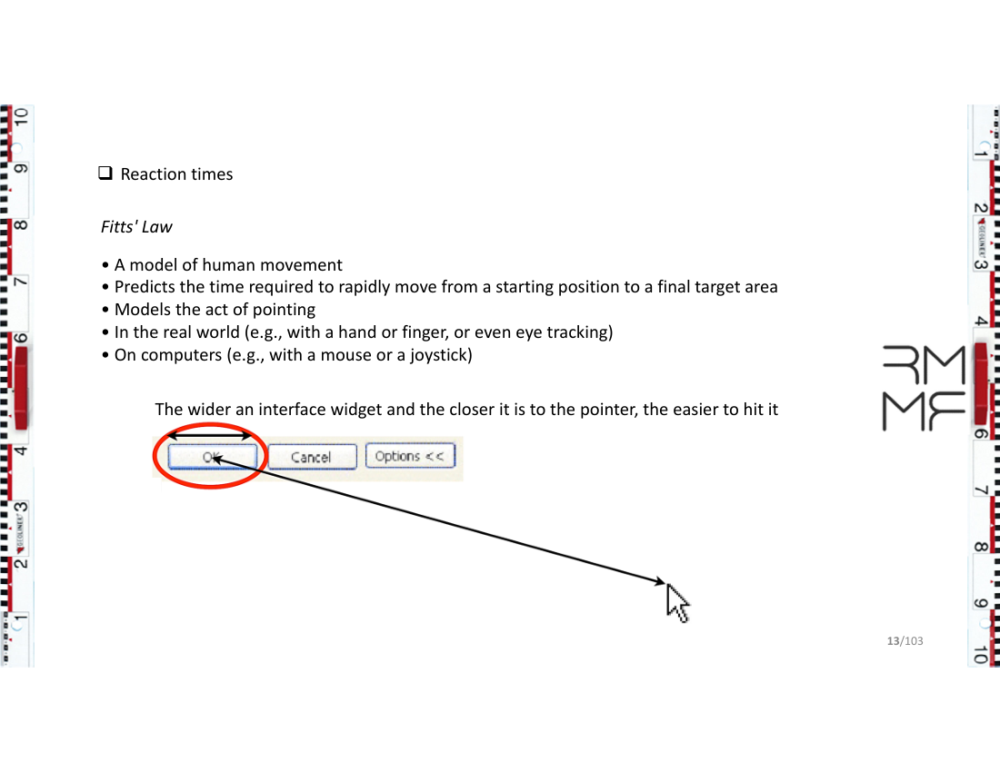
反应时（Reaction times）：菲茨定律（Fitts' Law）
- 一种人类动作模型（model）
- 预测（Predicts）从起始位置快速移动到最终目标区域所需的时间
- 对指向动作（act of pointing）进行建模（Models）
- 在现实世界中（例如使用手或手指，甚至眼动追踪（eye tracking））
- 在计算机上（例如使用鼠标或操纵杆）
界面控件越宽、且距离指针越近，就越容易点击中它
英文检索原文（公式与版式请看左侧原图）
Fitts' Law • A model of human movement • Predicts the time required to rapidly move from a starting position to a final target area • Models the act of pointing • In the real world (e.g., with a hand or finger, or even eye tracking) • On computers (e.g., with a mouse or a joystick) Reaction times The wider an interface widget and the closer it is to the pointer, the easier to hit it 13/103

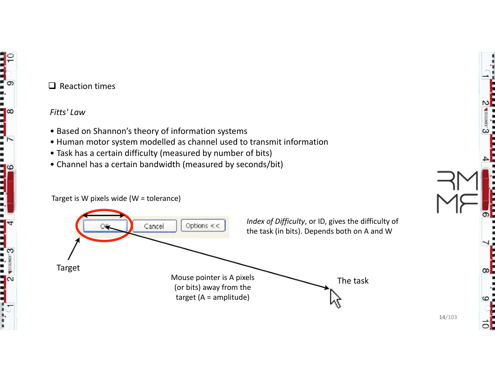
反应时（Reaction times）：菲茨定律（Fitts' Law）
任务图示说明（The task）
- 目标（Target）
- 鼠标指针距离目标 A 像素（或比特（bits））（A = 振幅（amplitude））
- 目标宽度为 W 像素（W = 容差（tolerance））
- 难度指数（Index of Difficulty, ID）以比特（bits）为单位给出任务的难度，同时取决于 A 和 W
- 基于香农的信息系统理论（Shannon’s theory of information systems）
- 将人类运动系统建模为用于传输信息的信道（channel）
- 任务具有一定的难度（以比特（bits）数衡量）
- 信道（Channel）具有一定的带宽（bandwidth）（以秒/比特，即 seconds/bit 衡量）
英文检索原文（公式与版式请看左侧原图）
The task Target Mouse pointer is A pixels (or bits) away from the target (A = amplitude) Target is W pixels wide (W = tolerance) Index of Difficulty, or ID, gives the difficulty of the task (in bits). Depends both on A and W Fitts' Law • Based on Shannon’s theory of information systems • Human motor system modelled as channel used to transmit information • Task has a certain difficulty (measured by number of bits) • Channel has a certain bandwidth (measured by seconds/bit) Reaction times 14/103

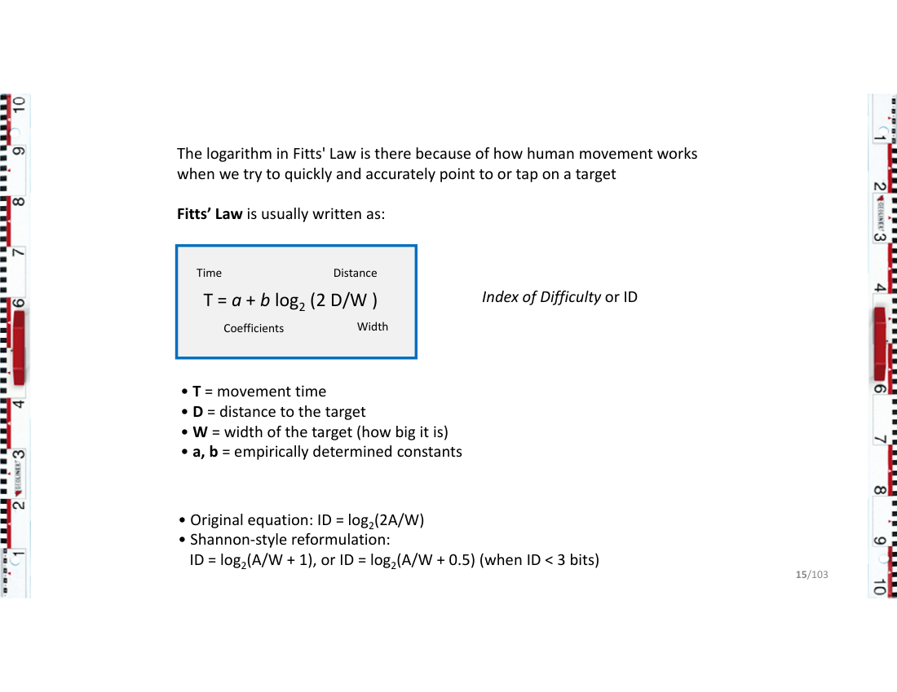
菲茨定律（Fitts' Law）中之所以出现对数（logarithm），是因为当人类试图快速且准确地指向或点击目标时，人体运动就是以这种方式运作的
菲茨定律（Fitts’ Law）通常写作：
T = a + b log2 (2 D/W )
T：时间（Time）a, b：系数（Coefficients）D：距离（Distance）W：宽度（Width）log2(2 D/W)：难度指数（Index of Difficulty, ID）
- 原始方程：
ID = log2(2A/W) - 香农式重构公式（Shannon-style reformulation）：
ID = log2(A/W + 1)，或 ID = log2(A/W + 0.5)（当 ID < 3 比特（bits） 时）
T= 运动时间（movement time）D= 到目标的距离W= 目标的宽度（目标有多大）a, b= 通过实证（empirically）确定的常数（constants）
英文检索原文（公式与版式请看左侧原图）
15/103 The logarithm in Fitts' Law is there because of how human movement works when we try to quickly and accurately point to or tap on a target Fitts’ Law is usually written as: T = a + b log2 (2 D/W ) Time Distance Coefficients Width • Original equation: ID = log2(2A/W) • Shannon-style reformulation: ID = log2(A/W + 1), or ID = log2(A/W + 0.5) (when ID < 3 bits) • T = movement time • D = distance to the target • W = width of the target (how big it is) • a, b = empirically determined constants Index of Difficulty or ID

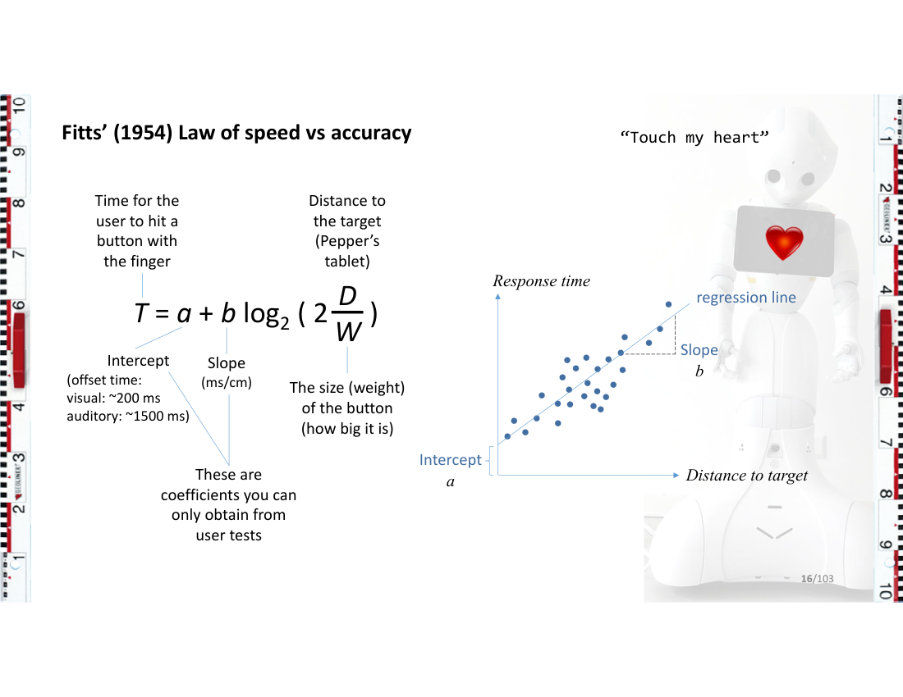
菲茨定律（Fitts’ (1954) Law）：速度与准确度（speed vs accuracy）
图表与公式说明
- 纵轴：响应时间（Response time）
- 横轴：到目标的距离（Distance to target）
- 拟合线：回归线（regression line）
- 斜率（Slope）：
b - 截距（Intercept）：
a - 示例情境：“Touch my heart”（触摸我的心）
公式：T = a + b log2 ( 2 D / W )
T：用户用手指点击按钮的时间D：到目标的距离（Pepper 的平板电脑）W：按钮的大小（权重 / weight）（即按钮有多大）a, b：这些系数（coefficients）只能通过用户测试（user tests）获得- 截距（Intercept）（偏移时间 / offset time：视觉约 200 ms，听觉约 1500 ms）
- 斜率（Slope）（ms/cm）
英文检索原文（公式与版式请看左侧原图）
Response time Distance to target regression line Slope b Intercept a “Touch my heart” 16/103 T = a + b log2 ( 2 ) D W Time for the user to hit a button with the finger Distance to the target (Pepper’s tablet) The size (weight) of the button (how big it is) These are coefficients you can only obtain from user tests Intercept (offset time: visual: ~200 ms auditory: ~1500 ms) Slope (ms/cm) Fitts’ (1954) Law of speed vs accuracy

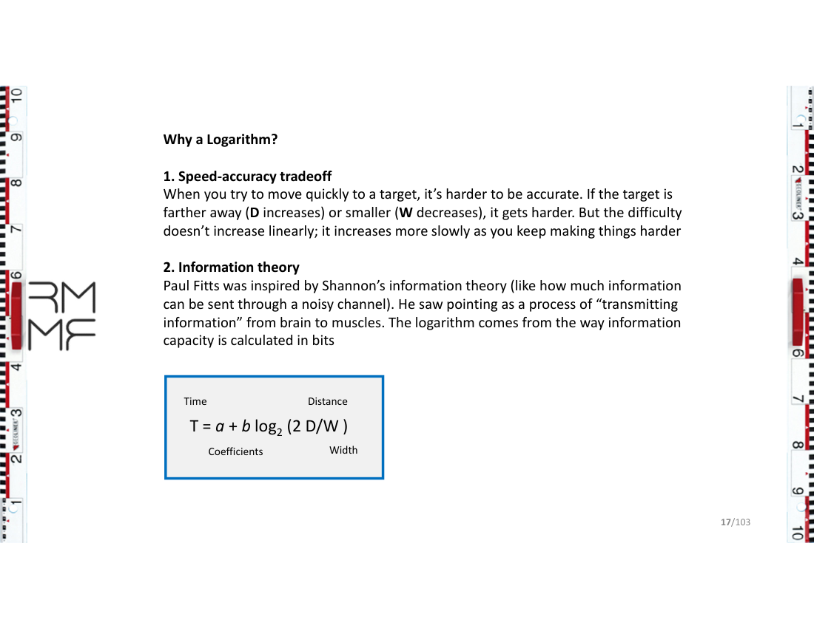
为什么使用对数（Logarithm）？
- 速度—准确度权衡（Speed-accuracy tradeoff）
当你试图快速移向目标时，就更难保持准确。如果目标距离更远（D 增大）或目标更小（W 减小），任务就会变得更难。但难度并不是线性（linearly）增加的；随着你不断增加难度，难度的增长会变得更缓慢。
- 信息论（Information theory）
Paul Fitts 受到香农信息论（information theory）（例如通过有噪声信道（channel）可以传输多少信息）的启发。他将指向动作视为一个从大脑向肌肉“传输信息”的过程。对数（logarithm）源于以比特（bits）为单位计算信息容量（information capacity）的方式。
公式：T = a + b log2 (2 D/W )
T：时间（Time）a, b：系数（Coefficients）D：距离（Distance）W：宽度（Width）
英文检索原文（公式与版式请看左侧原图）
Why a Logarithm? 1. Speed-accuracy tradeoff When you try to move quickly to a target, it’s harder to be accurate. If the target is farther away (D increases) or smaller (W decreases), it gets harder. But the difficulty doesn’t increase linearly; it increases more slowly as you keep making things harder 2. Information theory Paul Fitts was inspired by Shannon’s information theory (like how much information can be sent through a noisy channel). He saw pointing as a process of “transmitting information” from brain to muscles. The logarithm comes from the way information capacity is calculated in bits T = a + b log2 (2 D/W ) Time Distance Coefficients Width 17/103

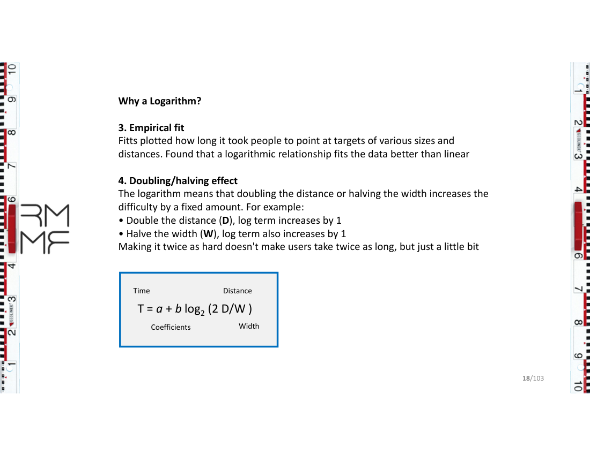
为什么使用对数（Logarithm）？
- 实证拟合（Empirical fit）
Fitts 绘制了人们指向不同大小和距离的目标所需的时间图，发现对数关系（logarithmic relationship）比线性关系（linear）能更好地拟合（fits）数据。
- 倍增/减半效应（Doubling/halving effect）
对数（logarithm）意味着将距离加倍或将宽度减半，会使难度增加一个固定量。例如：
- 将距离（D）加倍，对数项（log term）增加 1
- 将宽度（W）减半，对数项（log term）同样增加 1
使任务难度翻倍并不会让用户花费两倍的时间，而只是多花一点点时间。
公式：T = a + b log2 (2 D/W )
T：时间（Time）a, b：系数（Coefficients）D：距离（Distance）W：宽度（Width）
英文检索原文（公式与版式请看左侧原图）
Why a Logarithm? 3. Empirical fit Fitts plotted how long it took people to point at targets of various sizes and distances. Found that a logarithmic relationship fits the data better than linear 4. Doubling/halving effect The logarithm means that doubling the distance or halving the width increases the difficulty by a fixed amount. For example: • Double the distance (D), log term increases by 1 • Halve the width (W), log term also increases by 1 Making it twice as hard doesn't make users take twice as long, but just a little bit T = a + b log2 (2 D/W ) Time Distance Coefficients Width 18/103

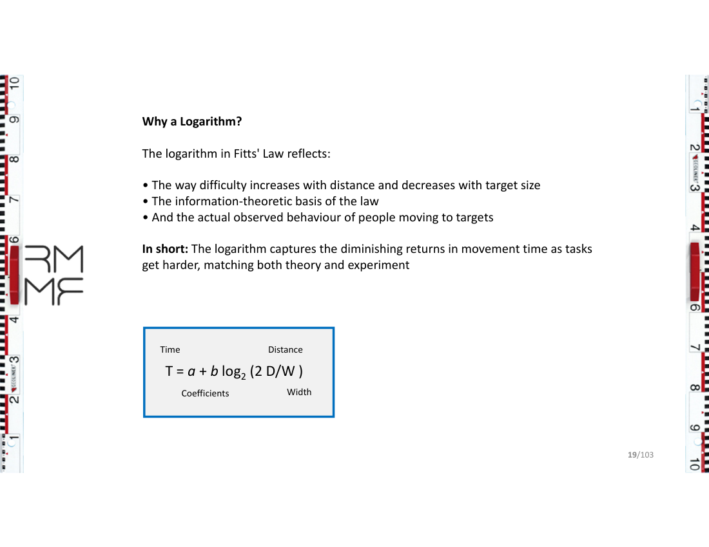
为什么使用对数（Logarithm）？
菲茨定律（Fitts' Law）中的对数（logarithm）反映了：
- 难度随距离增加而上升、随目标尺寸增大而下降的方式
- 该定律的信息论（information-theoretic）基础
- 以及人们移向目标时实际被观察（observed）到的行为
简言之：随着任务变难，对数（logarithm）捕捉到了运动时间（movement time）上的递减效应（diminishing returns），这同时契合了理论（theory）与实验（experiment）。
公式：T = a + b log2 (2 D/W )
T：时间（Time）a, b：系数（Coefficients）D：距离（Distance）W：宽度（Width）
英文检索原文（公式与版式请看左侧原图）
Why a Logarithm? The logarithm in Fitts' Law reflects: • The way difficulty increases with distance and decreases with target size • The information-theoretic basis of the law • And the actual observed behaviour of people moving to targets In short: The logarithm captures the diminishing returns in movement time as tasks get harder, matching both theory and experiment T = a + b log2 (2 D/W ) Time Distance Coefficients Width 19/103

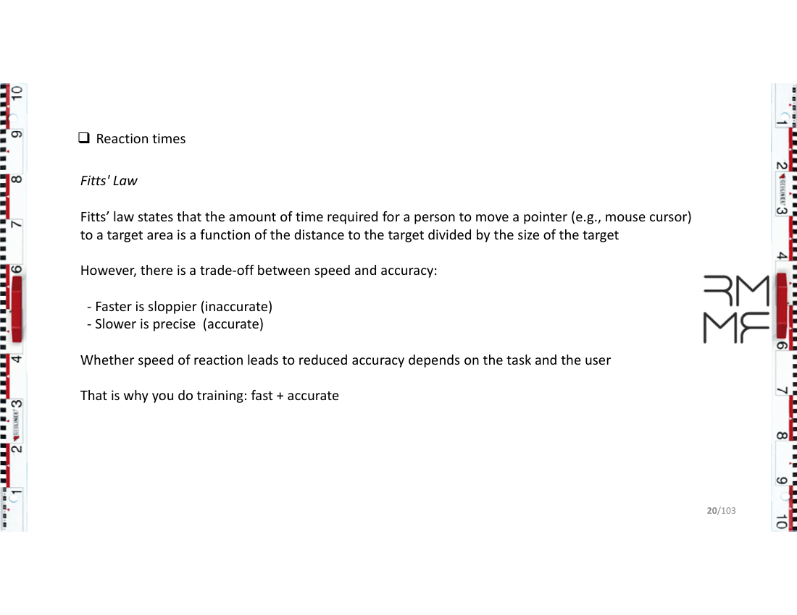
反应时（Reaction times）：菲茨定律（Fitts' Law）
- 菲茨定律（Fitts’ law）指出：一个人将指针（例如鼠标光标）移动到目标区域所需的时间，是到目标的距离除以目标大小的函数（function）
- 然而，速度与准确度（accuracy）之间存在权衡（trade-off）：
- 越快就越粗糙（不准确 / inaccurate）
- 越慢就越精准（准确 / accurate）
- 反应速度是否会导致准确度（accuracy）下降，取决于具体任务和用户
- 这正是为什么要进行训练：既快又准（fast + accurate）
英文检索原文（公式与版式请看左侧原图）
Fitts' Law Fitts’ law states that the amount of time required for a person to move a pointer (e.g., mouse cursor) to a target area is a function of the distance to the target divided by the size of the target However, there is a trade-off between speed and accuracy: - Faster is sloppier (inaccurate) - Slower is precise (accurate) Whether speed of reaction leads to reduced accuracy depends on the task and the user That is why you do training: fast + accurate Reaction times 20/103

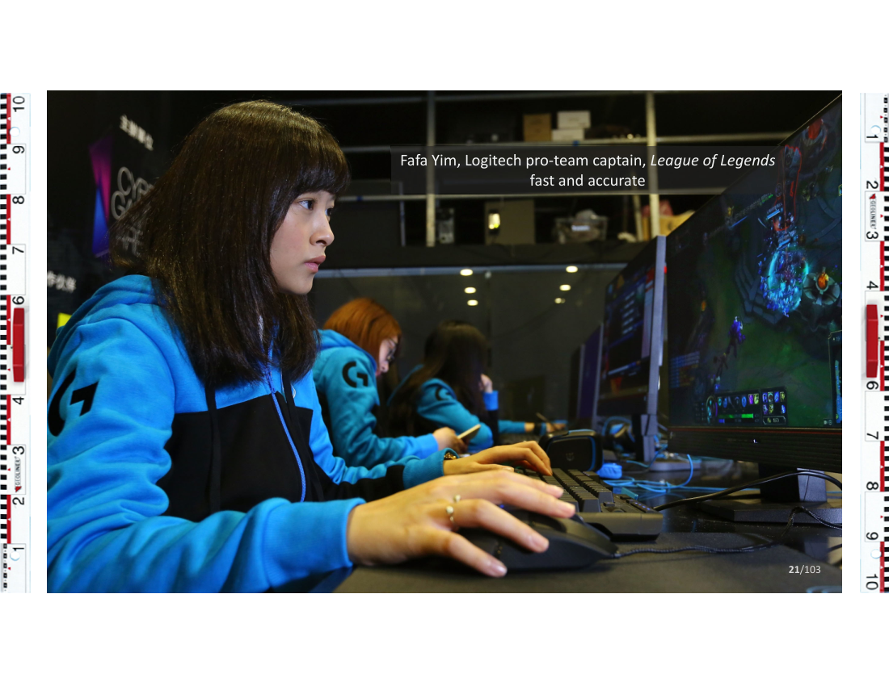
Fafa Yim，Logitech 职业战队队长，《英雄联盟》（League of Legends）
又快又准（fast and accurate）
英文检索原文（公式与版式请看左侧原图）
Fafa Yim, Logitech pro-team captain, League of Legends fast and accurate 21/103

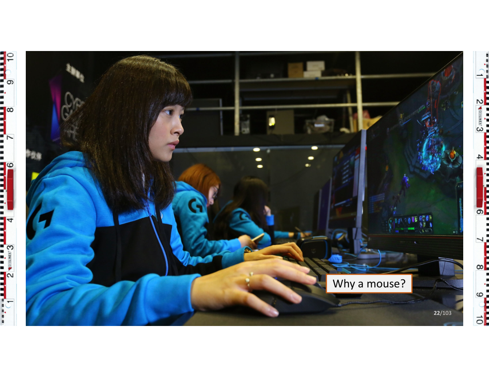
为什么用鼠标？（Why a mouse?）
本页主体为一名选手在电脑显示器前使用鼠标和键盘玩游戏的实景照片，画面右下角文本框内容为：“Why a mouse?”（为什么用鼠标？）。
英文检索原文（公式与版式请看左侧原图）
Why a mouse? 22/103

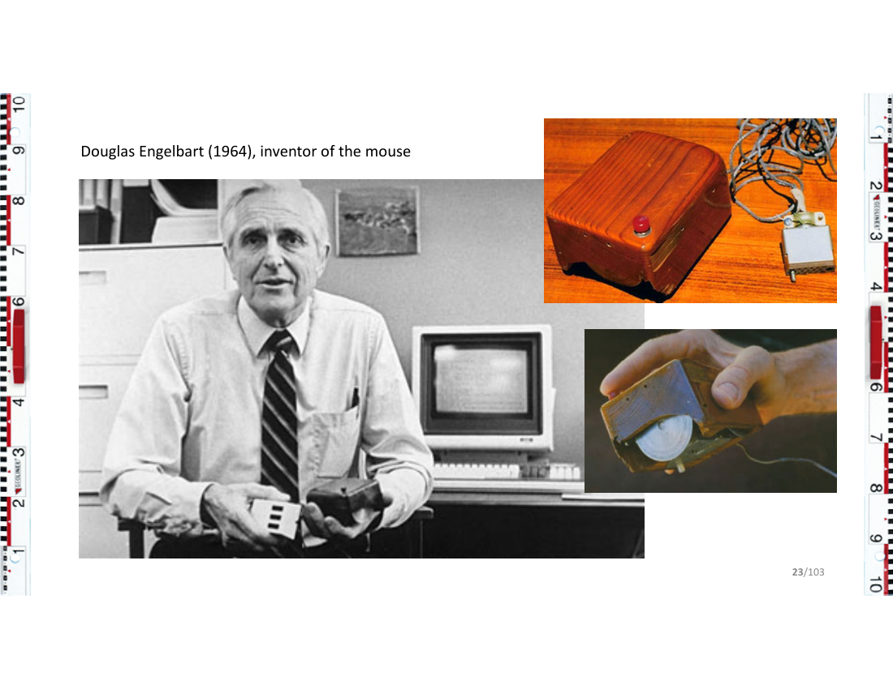
Douglas Engelbart（1964），鼠标的发明者
英文检索原文（公式与版式请看左侧原图）
Douglas Engelbart (1964), inventor of the mouse 23/103

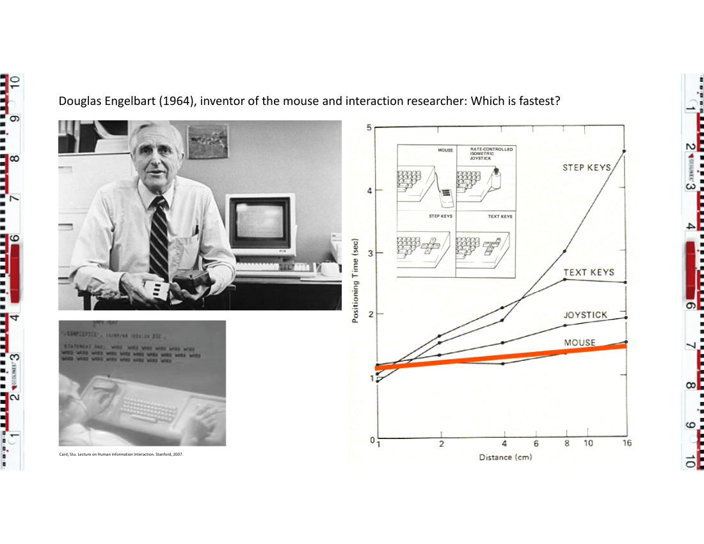
Douglas Engelbart（1964），鼠标发明者与交互研究者：哪一种最快？
出处：Card, Stu. Lecture on Human Information Interaction. Stanford, 2007.
英文检索原文（公式与版式请看左侧原图）
Card, Stu. Lecture on Human Information Interaction. Stanford, 2007. Douglas Engelbart (1964), inventor of the mouse and interaction researcher: Which is fastest?

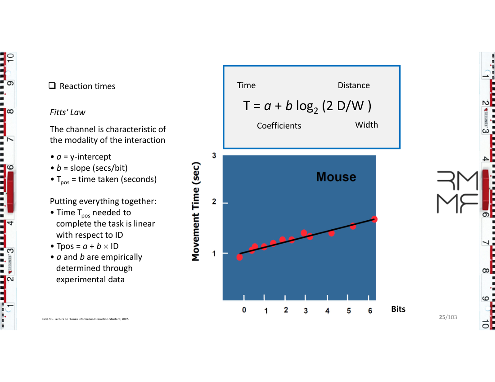
反应时（Reaction times）：菲茨定律（Fitts' Law）
- 比特（Bits）（坐标轴）
- 信道（channel）具有交互模态（modality）的特征
a= y轴截距（y-intercept）b= 斜率（slope）（秒/比特，secs/bit）Tpos= 所需时间（秒，seconds）
综合来看：
- 完成任务所需的时间
Tpos与 难度指数（ID） 呈线性（linear）关系 Tpos = a + b × IDa和b通过实验数据（experimental data）实证（empirically）确定
公式：T = a + b log2 (2 D/W )
T：时间（Time）a, b：系数（Coefficients）D：距离（Distance）W：宽度（Width）
出处：Card, Stu. Lecture on Human Information Interaction. Stanford, 2007.
英文检索原文（公式与版式请看左侧原图）
Bits Fitts' Law The channel is characteristic of the modality of the interaction • a = y-intercept • b = slope (secs/bit) • Tpos = time taken (seconds) Putting everything together: • Time Tpos needed to complete the task is linear with respect to ID • Tpos = a + b ID • a and b are empirically determined through experimental data Reaction times Card, Stu. Lecture on Human Information Interaction. Stanford, 2007. T = a + b log2 (2 D/W ) Time Distance Coefficients Width 25/103

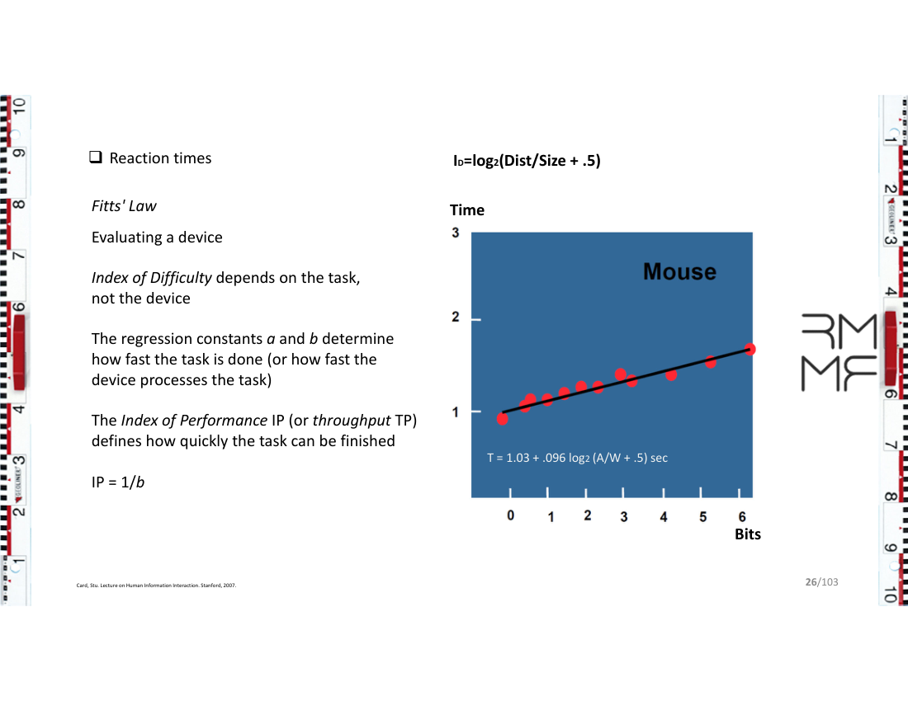
费茨定律（Fitts' Law）：评估设备
- 坐标轴：比特（Bits）（横轴）、时间（Time，纵轴）
- 公式：
T = 1.03 + .096 log2 (A/W + .5) secID = log2(Dist/Size + .5)
- 引用来源：Card, Stu. Lecture on Human Information Interaction. Stanford, 2007.
- 难度指数（Index of Difficulty）取决于任务本身，而非设备
- 回归常数（regression constants）
a和b决定了任务完成的速度（或设备处理任务的速度） - 性能指数（Index of Performance, IP）（或吞吐量（throughput, TP））定义了任务能够多快完成
IP = 1/b
- 所属板块：反应时（Reaction times）
英文检索原文（公式与版式请看左侧原图）
Bits Time T = 1.03 + .096 log2 (A/W + .5) sec ID=log2(Dist/Size + .5) Card, Stu. Lecture on Human Information Interaction. Stanford, 2007. Fitts' Law Evaluating a device Index of Difficulty depends on the task, not the device The regression constants a and b determine how fast the task is done (or how fast the device processes the task) The Index of Performance IP (or throughput TP) defines how quickly the task can be finished IP = 1/b Reaction times 26/103

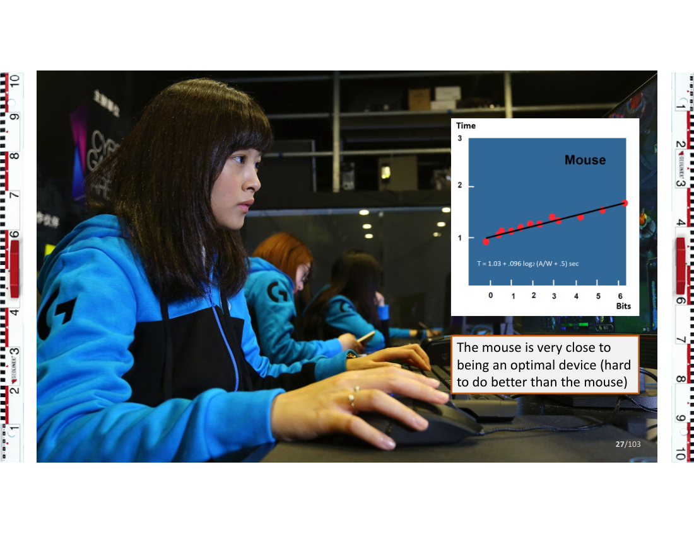
鼠标已经非常接近最优设备（很难做得比鼠标更好）。
英文检索原文（公式与版式请看左侧原图）
The mouse is very close to being an optimal device (hard to do better than the mouse) 27/103

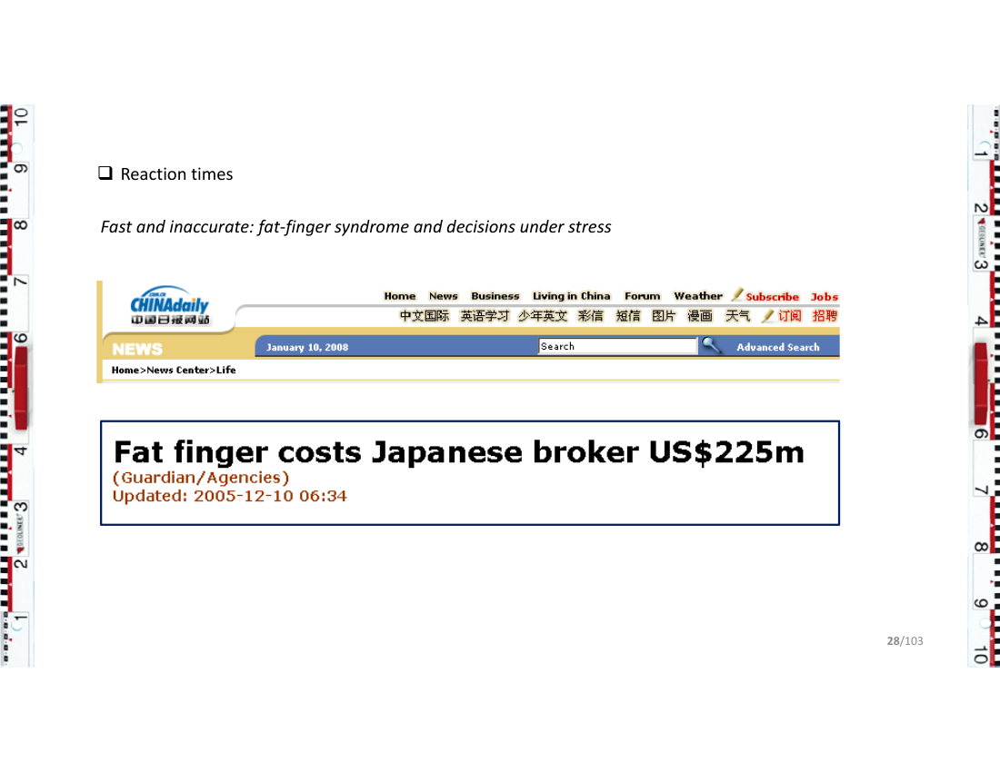
快而不准：肥手指综合征（fat-finger syndrome）与压力下的决策（decisions）
- 所属板块：反应时（Reaction times）
英文检索原文（公式与版式请看左侧原图）
Fast and inaccurate: fat-finger syndrome and decisions under stress Reaction times 28/103

“胖手指”让日本券商损失 2.25 亿美元（Fat finger costs Japanese broker US$225m）
（《卫报》/通讯社，Guardian/Agencies）
更新时间：2005-12-10 06:34
所谓的“胖手指综合症”（fat finger syndrome），是指在节奏极快的电子金融市场中工作的交易员，在压力之下偶尔会在键盘上按错按键，并在此过程中让雇主蒙受巨额损失的倾向。
周四，这一状况在东京证券交易所上演，且方式颇为惊人。
一名未具名、且想必很快就会失业的经纪人，成功以每股 1 日元（不到一便士）的价格，卖出了 610,000 股一家名为 J-Com Co 的招聘公司的股票——该公司当时正首次在交易所公开挂牌。而他原本实际想做的是以每股 610,000 日元（5,041 美元）的价格卖出 1 股。
所谓“胖手指”失误（errors）虽然在电子金融市场中并不常见，但当人类在狂热的交易条件下与计算机打交道时，这类失误被视为不可避免的风险。不过，此类错误通常会被迅速发现，由此产生的“异常”交易随后会在相关各方之间予以撤销平仓。
英文检索原文（公式与版式请看左侧原图）
29/103

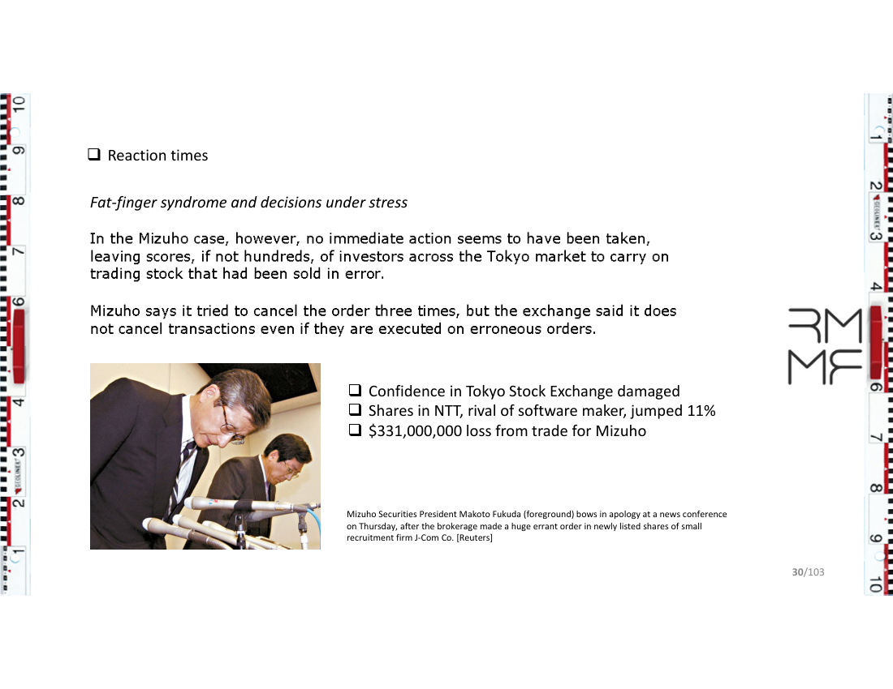
Mizuho Securities 社长 Makoto Fukuda（前景）于周四在新闻发布会上鞠躬致歉，此前该券商在小型招聘公司 J-Com Co. 新上市股票的交易中下达了一笔巨额错误订单。[Reuters]
肥手指综合征（fat-finger syndrome）与压力下的决策（decisions）
- 反应时（Reaction times）
- Tokyo Stock Exchange（东京证券交易所）的信心受损
- 软件制造商的竞争对手 NTT 股价飙升 11%
- Mizuho 因该笔交易亏损 331,000,000 美元
英文检索原文（公式与版式请看左侧原图）
Mizuho Securities President Makoto Fukuda (foreground) bows in apology at a news conference on Thursday, after the brokerage made a huge errant order in newly listed shares of small recruitment firm J-Com Co. [Reuters] Fat-finger syndrome and decisions under stress Reaction times Confidence in Tokyo Stock Exchange damaged Shares in NTT, rival of software maker, jumped 11% $331,000,000 loss from trade for Mizuho 30/103

考试样题（Exam Sample Item）
类别：“洞察”（Category “Insight”）
肥手指综合征（fat-finger syndrome）向我们揭示了关于费茨定律（Fitts’ Law）的什么道理？
A. 压力会恶化行为表现（performance）
B. Fitts 考虑了指针与界面控件之间的宽度比（width ratio），包括指针自身的宽度
C. 肥手指的对数分布（logarithmic distribution）不同于例如鼠标指针的情况
D. A 和 B 均正确
英文检索原文（公式与版式请看左侧原图）
Exam Sample Item Category “Insight” What does the fat-finger syndrome tell us about Fitts’ Law? A Stress worsens performance C The logarithmic distribution for fat fingers differs from, for instance, mouse pointers D A and B are correct 31/103 B Fitts reckons with the width ratio between pointer and interface widget, including pointer width

考试样题（Exam Sample Item）
类别：“洞察”（Category “Insight”）
肥手指综合征（fat-finger syndrome）向我们揭示了关于费茨定律（Fitts’ Law）的什么道理？
A. 压力会恶化行为表现（performance）
B. Fitts 考虑了指针与界面控件之间的宽度比（width ratio），包括指针自身的宽度
C. 肥手指的对数分布（logarithmic distribution）不同于例如鼠标指针的情况
D. A 和 B 均正确
核心结论（Lesson regarding Fitts）：界面控件越宽且距离指针越近，就越容易点击命中——尤其是当指针本身也很宽（即“肥手指”）时。因此，关键在于指针与目标宽度比（pointer-to-target width ratio），而不仅仅是目标宽度（target width）本身。而且确实，人在压力下会犯更多错误。
英文检索原文（公式与版式请看左侧原图）
Exam Sample Item Category “Insight” What does the fat-finger syndrome tell us about Fitts’ Law? A Stress worsens performance B Fitts reckons with the width ratio between pointer and interface widget, including pointer width C The logarithmic distribution for fat fingers differs from, for instance, mouse pointers D A and B are correct Lesson regarding Fitts: The wider an interface widget and the closer it is to the pointer, the easier to hit it - particularly when the pointer is wide as well (fat finger). So it’s about the pointer-to- target width ratio, not target width alone. And yes, people make more errors under stress 32/103

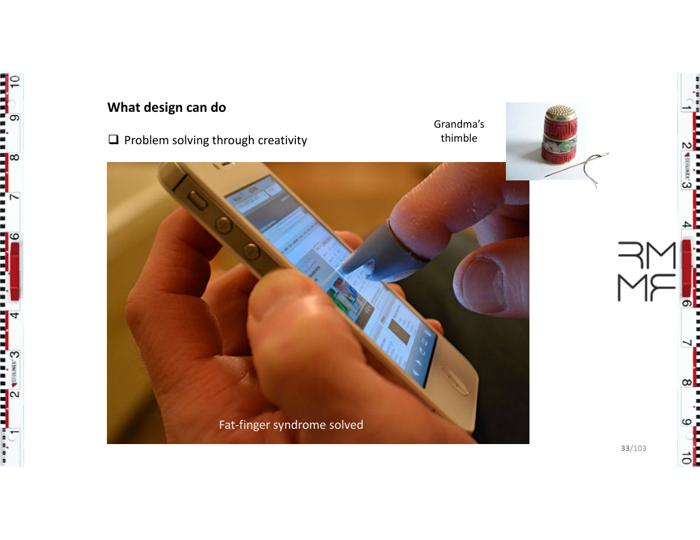
设计能做什么
- 通过创造力解决问题
- 肥手指综合征（fat-finger syndrome）得以解决
- 奶奶的顶针（Grandma’s thimble）
英文检索原文（公式与版式请看左侧原图）
What design can do Problem solving through creativity Fat-finger syndrome solved Grandma’s thimble 33/103

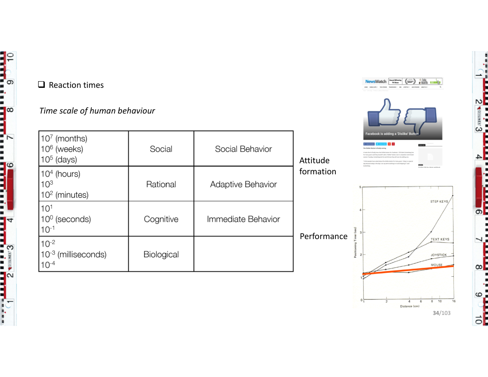
人类行为的时间尺度
- 行为表现（Performance）
- 态度形成（Attitude formation）
- 所属板块：反应时（Reaction times）
英文检索原文（公式与版式请看左侧原图）
Performance Attitude formation Time scale of human behaviour Reaction times 34/103

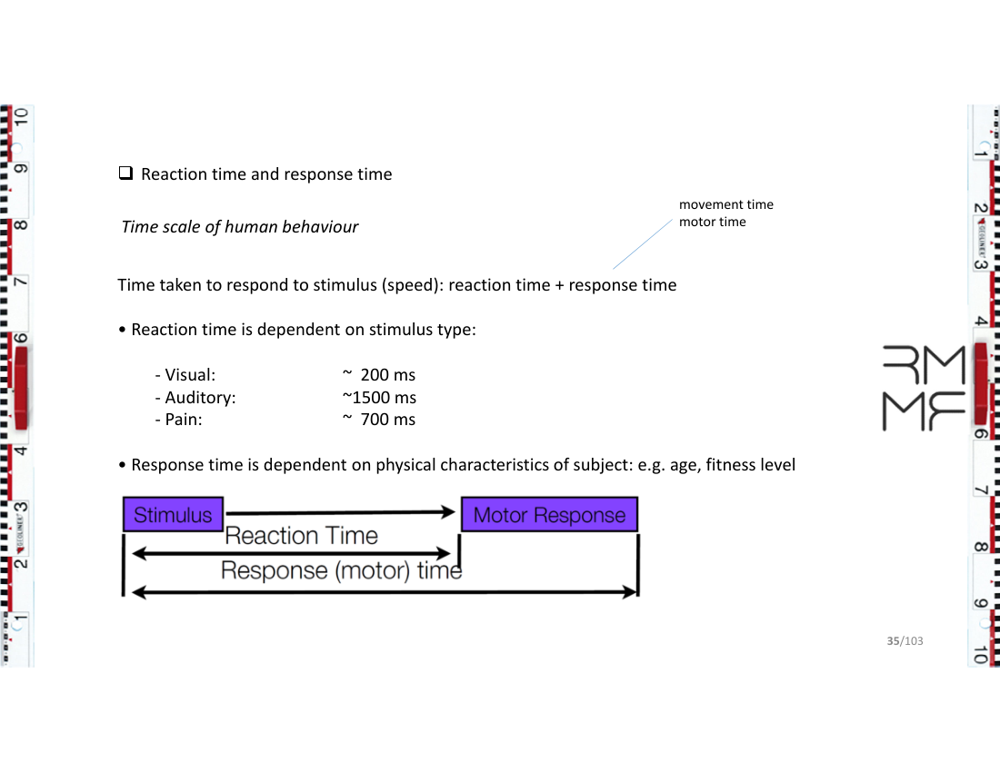
人类行为的时间尺度
- 反应时（Reaction time）与响应时间（response time）
对刺激（stimulus）做出反应所需的时间（速度）：反应时（reaction time） + 响应时间（response time）
- 反应时（Reaction time）取决于刺激类型（stimulus type）：
- 视觉（Visual）：约 200 ms
- 听觉（Auditory）：约 1500 ms
- 痛觉（Pain）：约 700 ms
- 响应时间（Response time）取决于被试（subject）的身体特征：例如年龄、体能水平
- 运动时间（movement time）
- 动作时间（motor time）
英文检索原文（公式与版式请看左侧原图）
Time scale of human behaviour Reaction time and response time Time taken to respond to stimulus (speed): reaction time + response time • Reaction time is dependent on stimulus type: - Visual: ~ 200 ms - Auditory: ~1500 ms - Pain: ~ 700 ms • Response time is dependent on physical characteristics of subject: e.g. age, fitness level movement time motor time 35/103

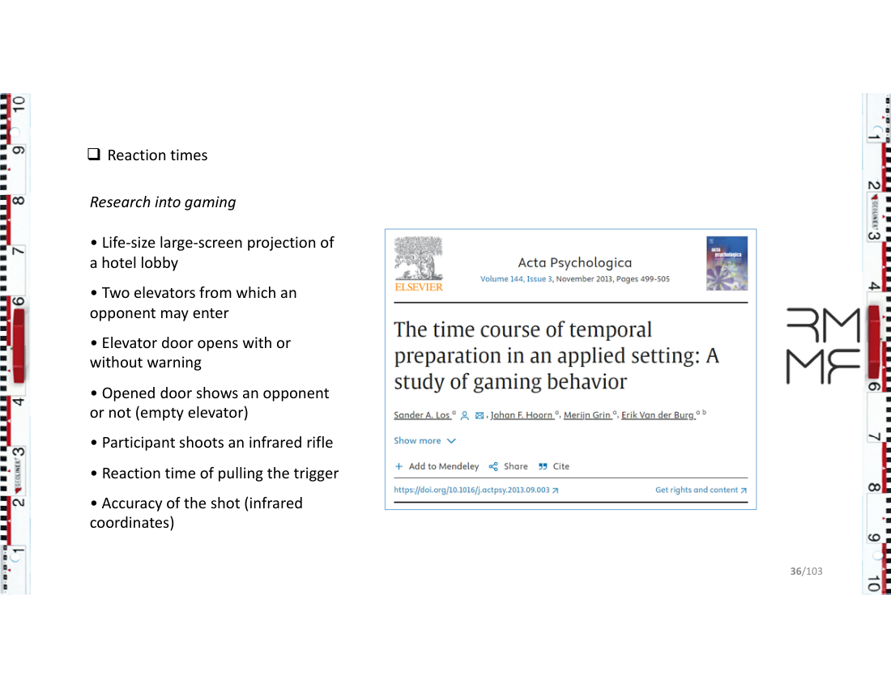
游戏研究
- 酒店大堂的真人比例大屏幕投影
- 对手可能从两部电梯中的任意一部进入
- 电梯门在有或无警告信号的情况下打开
- 打开的电梯门内可能显示对手，也可能没有（空电梯）
- 被试（Participant）使用红外步枪射击
- 扣动扳机的反应时（Reaction time）
- 射击的准确度（Accuracy）（红外坐标）
- 所属板块：反应时（Reaction times）
英文检索原文（公式与版式请看左侧原图）
Research into gaming • Life-size large-screen projection of a hotel lobby • Two elevators from which an opponent may enter • Elevator door opens with or without warning • Opened door shows an opponent or not (empty elevator) • Participant shoots an infrared rifle • Reaction time of pulling the trigger • Accuracy of the shot (infrared coordinates) Reaction times 36/103

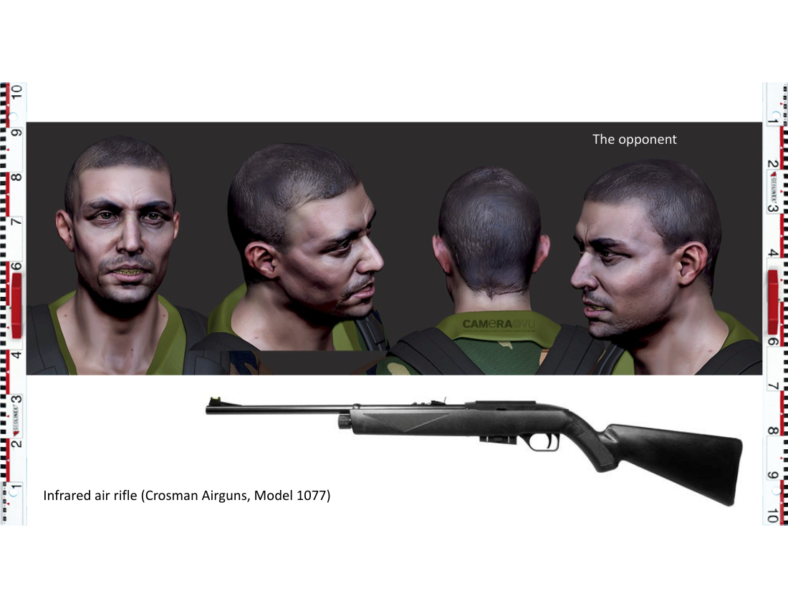
- 红外气步枪（Crosman Airguns, Model 1077）
- 对手
英文检索原文（公式与版式请看左侧原图）
Infrared air rifle (Crosman Airguns, Model 1077) The opponent

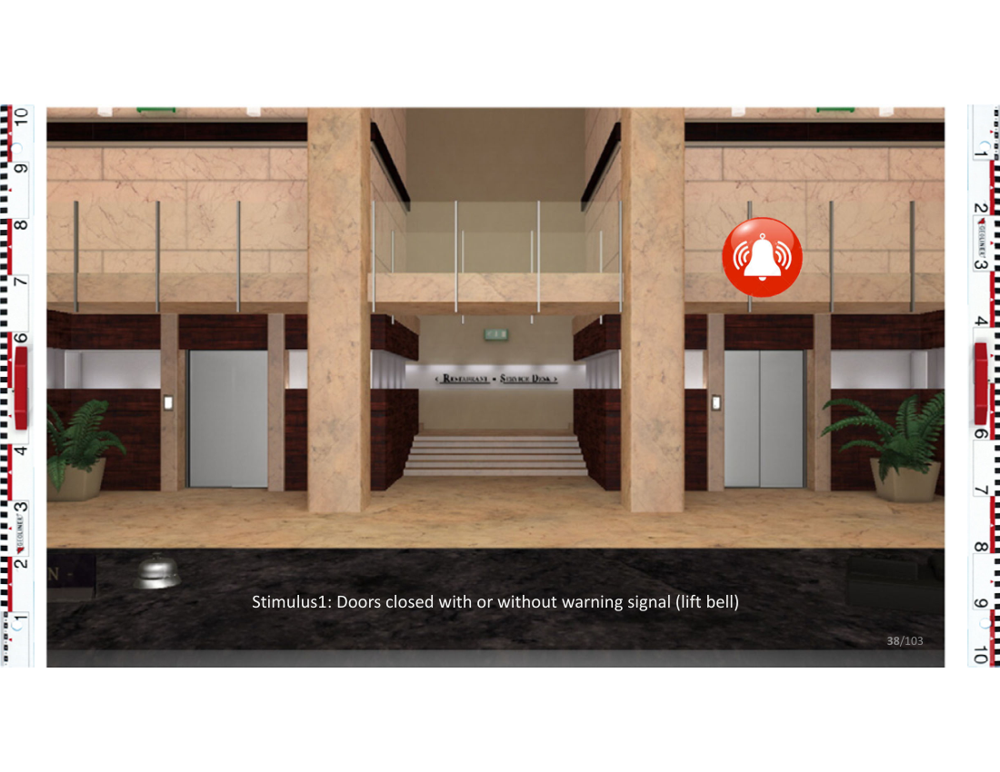
刺激（Stimulus1）：电梯门关闭，伴随或不伴随警告信号（warning signal）（电梯铃声）
英文检索原文（公式与版式请看左侧原图）
Stimulus1: Doors closed with or without warning signal (lift bell) 38/103

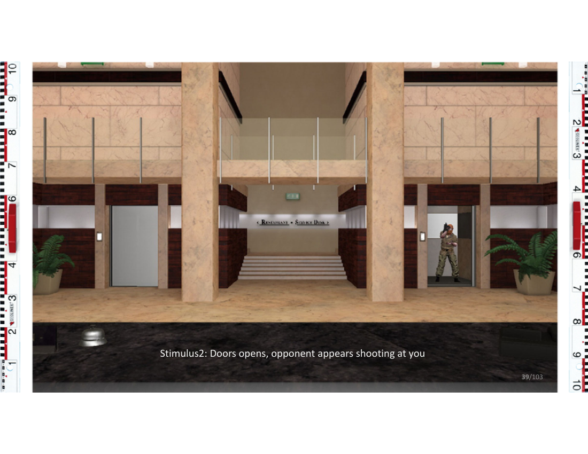
刺激（Stimulus2）：电梯门打开，对手出现并向你射击
英文检索原文（公式与版式请看左侧原图）
Stimulus2: Doors opens, opponent appears shooting at you 39/103

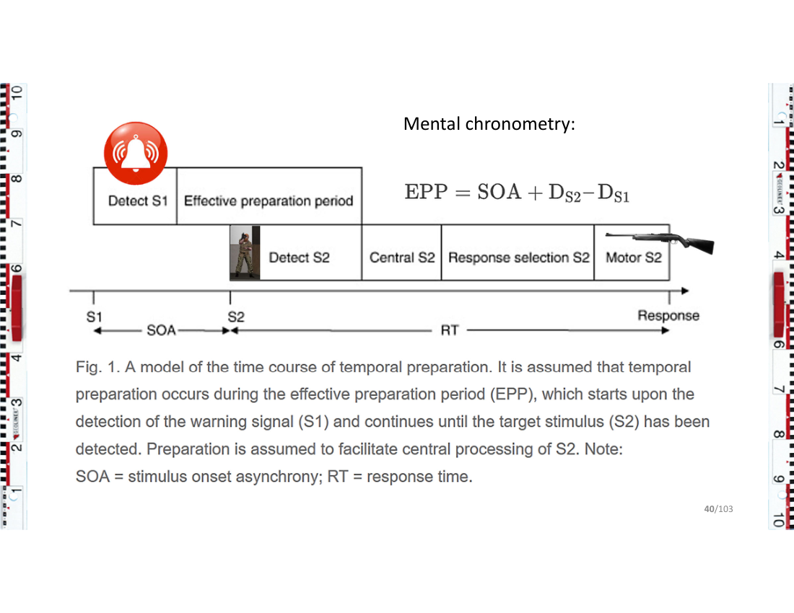
心理计时法（Mental chronometry）：
公式：EPP = SOA + D_S2 - D_S1
- 时间轴与加工阶段框图：
- 时间轴刻度：
S1→ 刺激呈现异步时间（SOA） →S2→ 反应时（RT） →反应（Response） - 第一阶段（上方）：
探测 S1（Detect S1）（配红底响铃图标）→ 有效准备期（Effective preparation period）（从探测 S1 结束持续至探测 S2 完成） - 第二阶段（下方，自 S2 开始）：
探测 S2（Detect S2）→ 中枢加工（Central S2） → 反应选择（Response selection S2） → 运动反应（Motor S2）（配枪械击发示意图标指向“反应”）
- 时间轴刻度：
图注（Fig. 1）：时间准备（temporal preparation）时间进程模型。该模型假定时间准备（temporal preparation）发生于有效准备期（effective preparation period, EPP）期间，该时期始于检测到警告信号（warning signal, S1）之时，并持续至目标刺激（target stimulus, S2）被检测到为止。准备过程被假定能够促进对 S2 的中枢加工（central processing）。注：SOA = 刺激呈现异步时间（stimulus onset asynchrony）；RT = 反应时（response time）。
英文检索原文（公式与版式请看左侧原图）
Mental chronometry: 40/103

考试样题：开放式问题（Open-ended Question）
类别：“洞察”（Category “Insight”）
本题基于文献 Los, S. A., Hoorn, J. F., Grin, M., & Van der Burg, E. (2013). The time course of temporal preparation in an applied setting: a study of gaming behavior. Acta Psychologica, 144(3), 499-505. 在该论文中，被试（participants）必须在有或无警告信号的情况下射击对手，同时电梯也可能显示为空（有或无对手）。
A. 对被试（participant）而言，最困难的实验条件（condition）会是什么？
B. 这会如何转化为反应时（reaction times）和错误率（error rate）上的表现？
英文检索原文（公式与版式请看左侧原图）
Exam Sample Item: Open-ended Question Category “Insight” This question is about Los, S. A., Hoorn, J. F., Grin, M., & Van der Burg, E. (2013). The time course of temporal preparation in an applied setting: a study of gaming behavior. Acta Psychologica, 144(3), 499-505. In that paper, participants had to shoot an opponent with or without warning, while elevators may appear to be empty (with or without opponent) A. What would have been the hardest condition for the participant? B. How would that translate into reaction times and error rate? 41/103

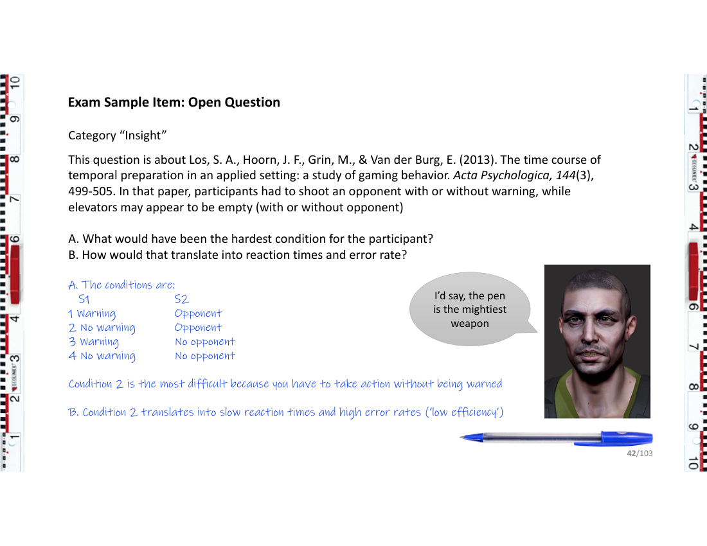
考试样题：开放式问题（Open Question）
类别：「洞察」（Insight）
本题基于 Los, S. A., Hoorn, J. F., Grin, M., & Van der Burg, E. (2013) 的论文《The time course of temporal preparation in an applied setting: a study of gaming behavior》（Acta Psychologica, 144(3), 499-505）。在该论文中，被试（participants）需要在有警告或无警告的情况下向对手射击，而电梯里可能是空的（有对手或无对手）。
A. 对被试（participant）而言，最困难的实验条件（condition）是什么？
B. 这会如何体现在反应时（reaction times）和错误率（error rate）上？
A. 各实验条件（conditions）如下：
| 条件 | S1 | S2 |
|---|---|---|
| 1 | 有警告（Warning） | 有对手（Opponent） |
| 2 | 无警告（No warning） | 有对手（Opponent） |
| 3 | 有警告（Warning） | 无对手（No opponent） |
| 4 | 无警告（No warning） | 无对手（No opponent） |
条件（Condition） 2 最困难，因为你必须在没有收到警告的情况下采取行动。
B. 条件（Condition） 2 会转化为较慢的反应时（reaction times）和较高的错误率（error rates）（“低效率（low efficiency）”）。
（漫画旁白：）“要我说，笔才是最强大的武器。”
英文检索原文（公式与版式请看左侧原图）
Exam Sample Item: Open Question Category “Insight” This question is about Los, S. A., Hoorn, J. F., Grin, M., & Van der Burg, E. (2013). The time course of temporal preparation in an applied setting: a study of gaming behavior. Acta Psychologica, 144(3), 499-505. In that paper, participants had to shoot an opponent with or without warning, while elevators may appear to be empty (with or without opponent) A. What would have been the hardest condition for the participant? B. How would that translate into reaction times and error rate? A. The conditions are: S1 S2 1 Warning Opponent 2 No warning Opponent 3 Warning No opponent 4 No warning No opponent Condition 2 is the most difficult because you have to take action without being warned B. Condition 2 translates into slow reaction times and high error rates (‘low efficiency’) I’d say, the pen is the mightiest weapon 42/103

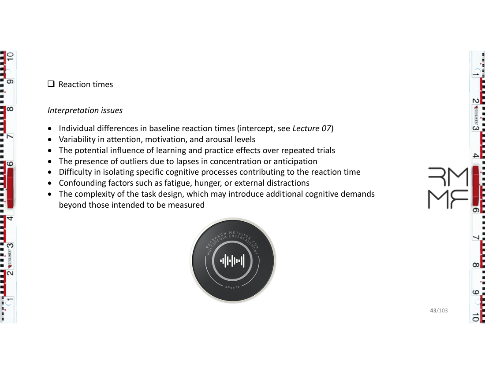
▪ 反应时（Reaction times）
解释方面的问题（Interpretation issues）
- 基线反应时（baseline reaction times）中的个体差异（Individual differences）（截距（intercept），见第 07 讲）
- 注意力、动机与唤醒水平（arousal levels）的变异性（Variability）
- 重复试次（trials）中学习效应与练习效应（learning and practice effects）的潜在影响
- 因注意力涣散或预期（anticipation）而出现的异常值（outliers）
- 难以分离出对反应时（reaction time）产生贡献的具体认知过程（cognitive processes）
- 混淆因素（Confounding factors），例如疲劳、饥饿或外部干扰
- 任务设计（task design）的复杂性，这可能会引入超出原定测量（measured）目标的额外认知需求（cognitive demands）
英文检索原文（公式与版式请看左侧原图）
Interpretation issues Individual differences in baseline reaction times (intercept, see Lecture 07) Variability in attention, motivation, and arousal levels The potential influence of learning and practice effects over repeated trials The presence of outliers due to lapses in concentration or anticipation Difficulty in isolating specific cognitive processes contributing to the reaction time Confounding factors such as fatigue, hunger, or external distractions The complexity of the task design, which may introduce additional cognitive demands beyond those intended to be measured Reaction times 43/103

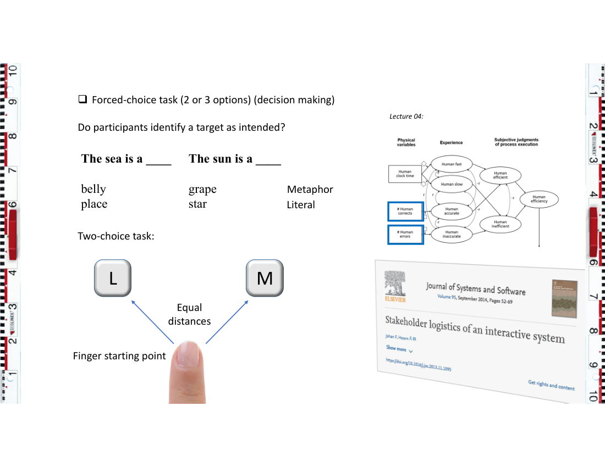
▪ 强制选择任务（Forced-choice task）（2 个或 3 个选项）（决策（decision making））
被试（participants）是否按预期识别出了目标（target）？
第 04 讲（Lecture 04）：
二选一任务（Two-choice task）：
The sea is a ____（大海是____）belly（肚腹）place（地方）
The sun is a ____（太阳是____）grape（葡萄）star（恒星）
按键与示意图说明：
L：字面义（Literal）M：隐喻（Metaphor）- 手指起始位置（Finger starting point）
- 等距（Equal distances）
英文检索原文（公式与版式请看左侧原图）
Forced-choice task (2 or 3 options) (decision making) Do participants identify a target as intended? Two-choice task: Lecture 04: The sea is a ____ belly place The sun is a ____ grape star L M Finger starting point Equal distances Metaphor Literal

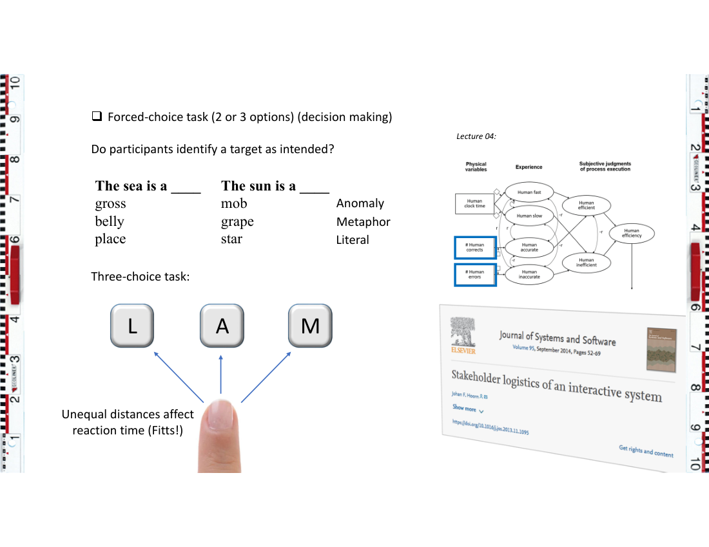
▪ 强制选择任务（Forced-choice task）（2 个或 3 个选项）（决策（decision making））
被试（participants）是否按预期识别出了目标（target）？
第 04 讲（Lecture 04）：
三选一任务（Three-choice task）：
The sea is a ____（大海是____）gross（粗糙）belly（肚腹）place（地方）
The sun is a ____（太阳是____）mob（暴民）grape（葡萄）star（恒星）
按键与示意图说明：
L：字面义（Literal）M：隐喻（Metaphor）A：语义异常（Anomaly）- 不等距离会影响反应时（reaction time）（菲茨定律（Fitts）！）
英文检索原文（公式与版式请看左侧原图）
Forced-choice task (2 or 3 options) (decision making) Do participants identify a target as intended? Three-choice task: Lecture 04: The sea is a ____ gross belly place The sun is a ____ mob grape star L M Unequal distances affect reaction time (Fitts!) Metaphor Literal A Anomaly

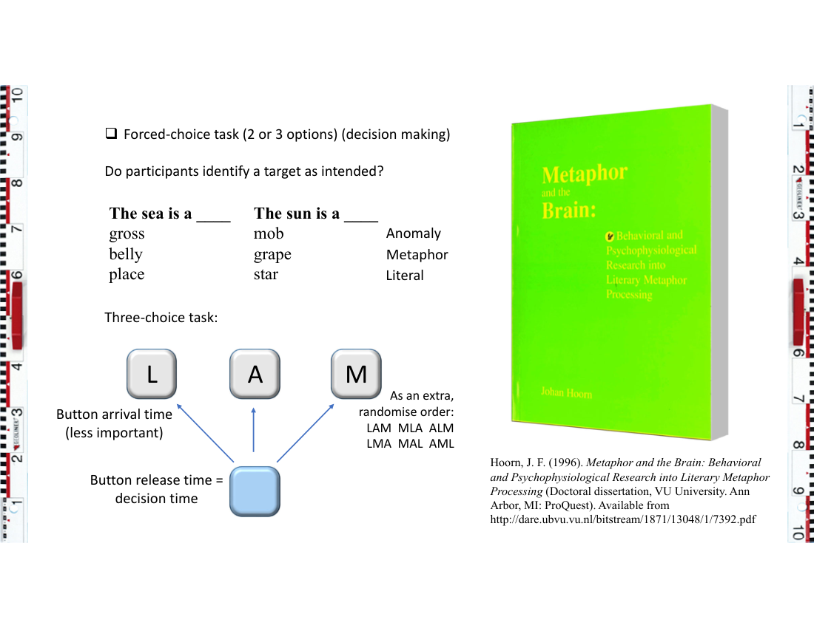
▪ 强制选择任务（Forced-choice task）（2 个或 3 个选项）（决策（decision making））
被试（participants）是否按预期识别出了目标（target）？
三选一任务（Three-choice task）：
The sea is a ____（大海是____）gross（粗糙）belly（肚腹）place（地方）
The sun is a ____（太阳是____）mob（暴民）grape（葡萄）star（恒星）
按键与计时说明：
L：字面义（Literal）M：隐喻（Metaphor）A：语义异常（Anomaly）- 按键到达时间（Button arrival time）（次要）
- 按键松开时间（Button release time） = 决策时间（decision time）
- 额外控制：随机化顺序（randomise order）：
LAMMLAALMLMAMALAML
参考文献（References）
Hoorn, J. F. (1996). Metaphor and the Brain: Behavioral and Psychophysiological Research into Literary Metaphor Processing (Doctoral dissertation, VU University. Ann Arbor, MI: ProQuest). Available from http://dare.ubvu.vu.nl/bitstream/1871/13048/1/7392.pdf
英文检索原文（公式与版式请看左侧原图）
Forced-choice task (2 or 3 options) (decision making) Do participants identify a target as intended? Three-choice task: The sea is a ____ gross belly place The sun is a ____ mob grape star L M Metaphor Literal A Anomaly Button arrival time (less important) Button release time = decision time As an extra, randomise order: LAM MLA ALM LMA MAL AML Hoorn, J. F. (1996). Metaphor and the Brain: Behavioral and Psychophysiological Research into Literary Metaphor Processing (Doctoral dissertation, VU University. Ann Arbor, MI: ProQuest). Available from http://dare.ubvu.vu.nl/bitstream/1871/13048/1/7392.pdf

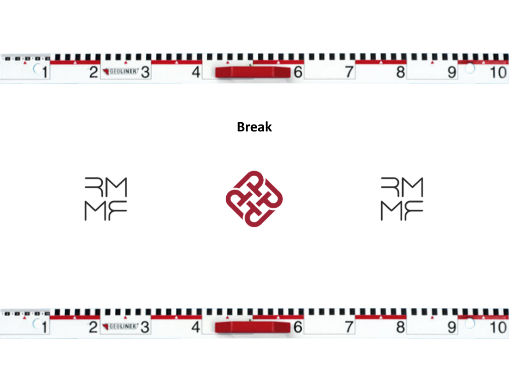
课间休息（Break）
英文检索原文（公式与版式请看左侧原图）
Break

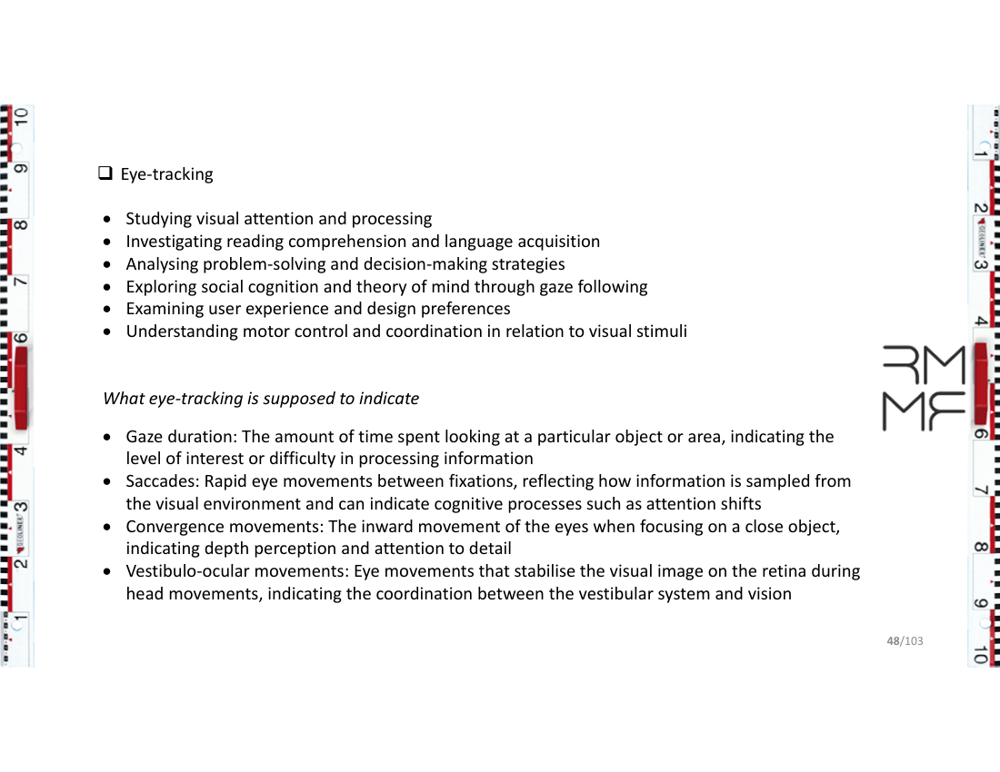
▪ 眼动追踪（Eye-tracking）
- 研究视觉注意（visual attention）与信息加工
- 探究阅读理解与语言习得
- 分析问题解决与决策策略（decision-making strategies）
- 通过视线追随（gaze following）探索社会认知与心理理论（theory of mind）
- 考察用户体验（user experience）与设计偏好
- 理解与视觉刺激（visual stimuli）相关的运动控制与协调
眼动追踪（eye-tracking）预期能指示什么（What eye-tracking is supposed to indicate）
- 注视时长（Gaze duration）：注视特定对象或区域所花费的时间，指示对信息的兴趣程度或加工难度
- 眼跳（Saccades）：在注视点（fixations）之间的快速眼球运动，反映如何从视觉环境中采样信息，并可指示诸如注意力转移之类的认知过程（cognitive processes）
- 辐辏运动（Convergence movements）：注视近处物体时双眼向内的运动，指示深度知觉与对细节的关注
- 前庭-眼动反射运动（Vestibulo-ocular movements）：在头部运动过程中将视觉图像稳定在视网膜上的眼球运动，指示前庭系统与视觉之间的协调
英文检索原文（公式与版式请看左侧原图）
Studying visual attention and processing Investigating reading comprehension and language acquisition Analysing problem-solving and decision-making strategies Exploring social cognition and theory of mind through gaze following Examining user experience and design preferences Understanding motor control and coordination in relation to visual stimuli What eye-tracking is supposed to indicate Gaze duration: The amount of time spent looking at a particular object or area, indicating the level of interest or difficulty in processing information Saccades: Rapid eye movements between fixations, reflecting how information is sampled from the visual environment and can indicate cognitive processes such as attention shifts Convergence movements: The inward movement of the eyes when focusing on a close object, indicating depth perception and attention to detail Vestibulo-ocular movements: Eye movements that stabilise the visual image on the retina during head movements, indicating the coordination between the vestibular system and vision Eye-tracking 48/103

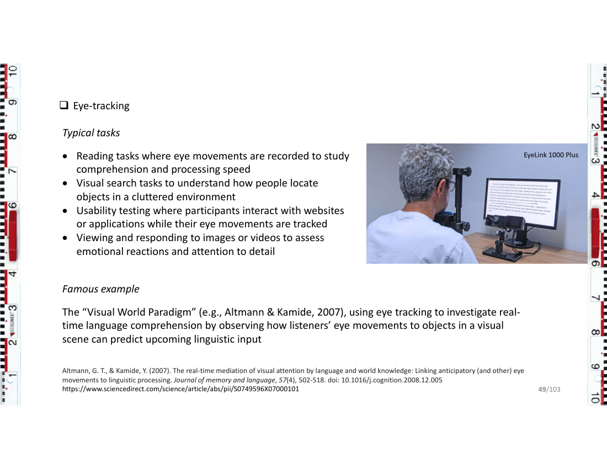
▪ 眼动追踪（Eye-tracking）
典型任务（Typical tasks）
- 阅读任务（Reading tasks）：记录眼球运动以研究理解能力与加工速度
- 视觉搜索任务（Visual search tasks）：了解人们如何在杂乱环境中定位物体
- 可用性测试（Usability testing）：被试（participants）与网站或应用程序交互的同时追踪其眼球运动
- 观看并对图像或视频作出反应，以评估情绪反应与对细节的关注
著名范例（Famous example）
“视觉世界范式（Visual World Paradigm）”（例如 Altmann & Kamide, 2007）：利用眼动追踪（eye tracking）研究实时语言理解，通过观察听者对视觉场景中物体的眼球运动如何预测即将出现的语言输入
设备标注：EyeLink 1000 Plus
参考文献（References）
Altmann, G. T., & Kamide, Y. (2007). The real-time mediation of visual attention by language and world knowledge: Linking anticipatory (and other) eye movements to linguistic processing. Journal of memory and language, 57(4), 502-518. doi: 10.1016/j.cognition.2008.12.005
https://www.sciencedirect.com/science/article/abs/pii/S0749596X07000101
英文检索原文（公式与版式请看左侧原图）
Typical tasks Reading tasks where eye movements are recorded to study comprehension and processing speed Visual search tasks to understand how people locate objects in a cluttered environment Usability testing where participants interact with websites or applications while their eye movements are tracked Viewing and responding to images or videos to assess emotional reactions and attention to detail Eye-tracking Altmann, G. T., & Kamide, Y. (2007). The real-time mediation of visual attention by language and world knowledge: Linking anticipatory (and other) eye movements to linguistic processing. Journal of memory and language, 57(4), 502-518. doi: 10.1016/j.cognition.2008.12.005 https://www.sciencedirect.com/science/article/abs/pii/S0749596X07000101 Famous example The “Visual World Paradigm” (e.g., Altmann & Kamide, 2007), using eye tracking to investigate real- time language comprehension by observing how listeners’ eye movements to objects in a visual scene can predict upcoming linguistic input EyeLink 1000 Plus 49/103

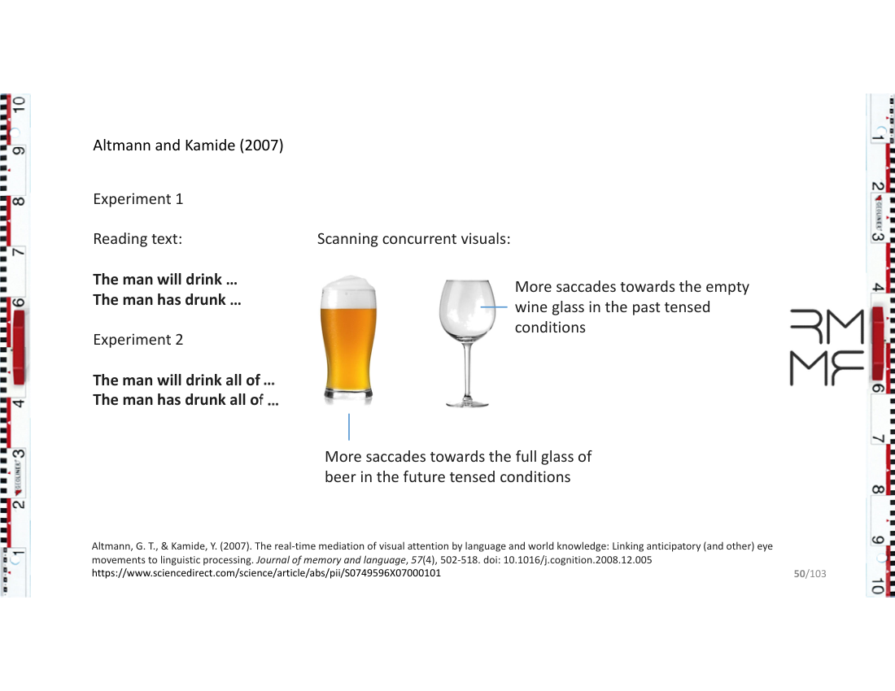
Altmann 与 Kamide（2007）
实验 1（Experiment 1）
阅读文本（Reading text）：
The man will drink …（那名男子将要喝……）The man has drunk …（那名男子已经喝了……）
扫视同步呈现的视觉画面（Scanning concurrent visuals）
实验 2（Experiment 2）
The man will drink all of …（那名男子将要喝光……）The man has drunk all of …（那名男子已经喝光了……）- 在过去时态实验条件（conditions）下，指向空红酒杯的眼跳（saccades）更多
- 在将来时态实验条件（conditions）下，指向满杯啤酒的眼跳（saccades）更多
参考文献（References）
Altmann, G. T., & Kamide, Y. (2007). The real-time mediation of visual attention by language and world knowledge: Linking anticipatory (and other) eye movements to linguistic processing. Journal of memory and language, 57(4), 502-518. doi: 10.1016/j.cognition.2008.12.005
https://www.sciencedirect.com/science/article/abs/pii/S0749596X07000101
英文检索原文（公式与版式请看左侧原图）
Experiment 1 Reading text: Scanning concurrent visuals: The man will drink … The man has drunk … Experiment 2 The man will drink all of … The man has drunk all of … More saccades towards the empty wine glass in the past tensed conditions More saccades towards the full glass of beer in the future tensed conditions Altmann and Kamide (2007) Altmann, G. T., & Kamide, Y. (2007). The real-time mediation of visual attention by language and world knowledge: Linking anticipatory (and other) eye movements to linguistic processing. Journal of memory and language, 57(4), 502-518. doi: 10.1016/j.cognition.2008.12.005 https://www.sciencedirect.com/science/article/abs/pii/S0749596X07000101 50/103

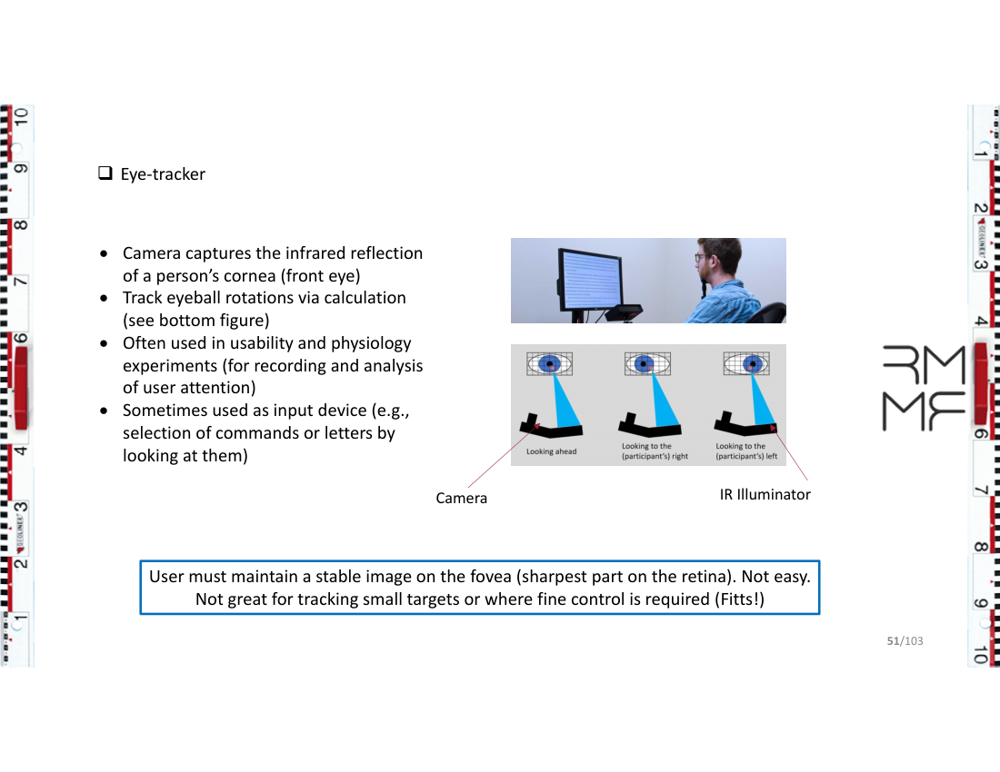
▪ 眼动仪（Eye-tracker）
图示组件：
- 摄像头（Camera）
- 红外光源（IR Illuminator）
要点说明：
- 摄像头捕捉人眼角膜（眼球前部）的红外反射
- 通过计算追踪眼球旋转（见下方图示）
- 常用于可用性实验与生理学实验（usability and physiology experiments）（用于记录和分析用户注意力）
- 有时用作输入设备（例如，通过注视来选择指令或字母）
用户必须将图像稳定保持在中央凹（fovea，视网膜上最敏锐的部位）上。这并不容易。
不太适合追踪小目标或需要精细控制的场景（菲茨定律（Fitts）！）
英文检索原文（公式与版式请看左侧原图）
Camera IR Illuminator Camera captures the infrared reflection of a person’s cornea (front eye) Track eyeball rotations via calculation (see bottom figure) Often used in usability and physiology experiments (for recording and analysis of user attention) Sometimes used as input device (e.g., selection of commands or letters by looking at them) User must maintain a stable image on the fovea (sharpest part on the retina). Not easy. Not great for tracking small targets or where fine control is required (Fitts!) Eye-tracker 51/103

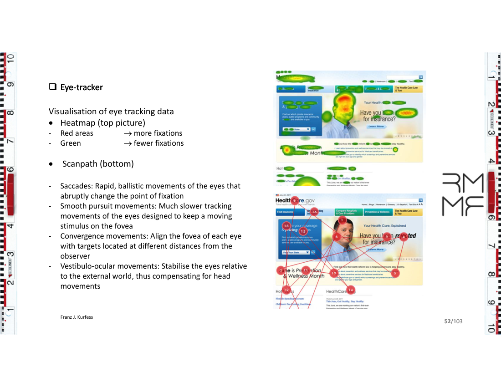
▪ 眼动仪（Eye-tracker）
眼动追踪数据可视化（Visualisation of eye tracking data）
Franz J. Kurfess
- 热力图（Heatmap）（上方图片）
- 红色区域 → 更多注视点（fixations）
- 绿色 → 更少注视点（fixations）
- 眼动扫描路径（Scanpath）（下方）
- 眼跳（Saccades）：快速、弹道式的眼球运动，会突然改变注视点（point of fixation）
- 平滑追随运动（Smooth pursuit movements）：慢得多的眼球追踪运动，旨在将移动刺激保持在中央凹（fovea）上
- 辐辏运动（Convergence movements）：使每只眼睛的中央凹与距离观察者不同远近的目标对齐
- 前庭-眼动反射运动（Vestibulo-ocular movements）：使眼睛相对于外部世界保持稳定，从而补偿头部运动
英文检索原文（公式与版式请看左侧原图）
Franz J. Kurfess Visualisation of eye tracking data Heatmap (top picture) - Red areas more fixations - Green fewer fixations Scanpath (bottom) - Saccades: Rapid, ballistic movements of the eyes that abruptly change the point of fixation - Smooth pursuit movements: Much slower tracking movements of the eyes designed to keep a moving stimulus on the fovea - Convergence movements: Align the fovea of each eye with targets located at different distances from the observer - Vestibulo-ocular movements: Stabilise the eyes relative to the external world, thus compensating for head movements Eye-tracker 52/103 Eye-tracker 52/103 Eye-tracker 52/103

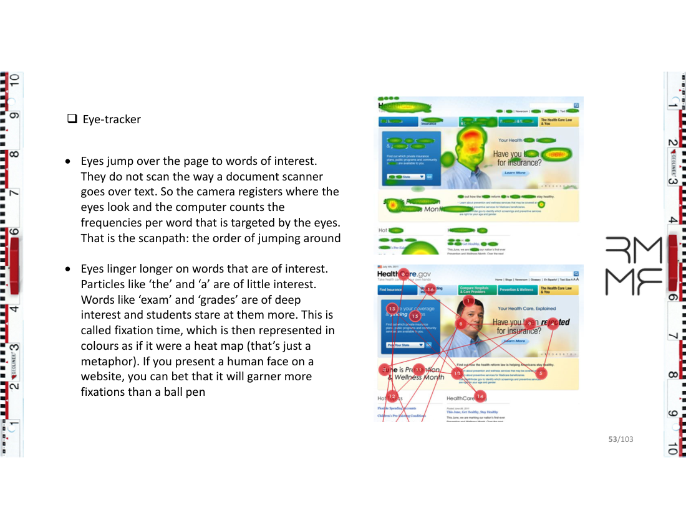
眼动仪（Eye-tracker）
- 眼睛会在页面上跳跃到感兴趣的词上，而不会像文档扫描仪那样逐行扫过文本。因此，摄像头会记录眼睛注视的位置，计算机则统计眼睛所瞄准的每个词的频次（frequencies）。这就是扫描路径（scanpath）：视线四处跳跃的顺序。
- 眼睛在感兴趣的词上停留的时间更长。像“the”和“a”这样的虚词几乎不引起兴趣；而像“exam”（考试）和“grades”（成绩）这样的词则会引起浓厚兴趣，学生会更多地盯着它们看。这被称为注视时间（fixation time），随后它会以颜色形式呈现，宛如一张热力图（heat map）（这只是一个比喻）。如果你在网站上展示一张人脸，几乎可以肯定它比一支圆珠笔会吸引更多的注视（fixations）。
英文检索原文（公式与版式请看左侧原图）
Eyes jump over the page to words of interest. They do not scan the way a document scanner goes over text. So the camera registers where the eyes look and the computer counts the frequencies per word that is targeted by the eyes. That is the scanpath: the order of jumping around Eyes linger longer on words that are of interest. Particles like ‘the’ and ‘a’ are of little interest. Words like ‘exam’ and ‘grades’ are of deep interest and students stare at them more. This is called fixation time, which is then represented in colours as if it were a heat map (that’s just a metaphor). If you present a human face on a website, you can bet that it will garner more fixations than a ball pen Eye-tracker 53/103

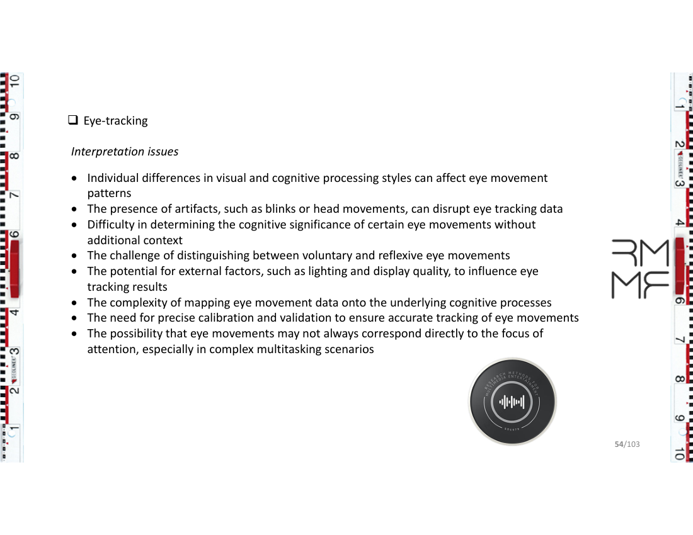
眼动追踪（Eye-tracking）：解释问题（Interpretation issues）
- 视觉与认知加工（cognitive processing）风格上的个体差异（Individual differences）会影响眼动模式。
- 眨眼或头部移动等伪迹（artifacts）的存在会干扰眼动追踪数据（eye tracking data）。
- 在缺乏额外语境的情况下，难以确定特定眼动的认知意义。
- 难以区分自主性眼动（voluntary eye movements）与反射性眼动（reflexive eye movements）。
- 光照和显示质量等外部因素（external factors）可能会影响眼动追踪结果。
- 将眼动数据映射到潜在认知过程（cognitive processes）上具有复杂性。
- 需要进行精确的校准（calibration）和验证（validation），以确保眼动追踪的准确性。
- 眼动并不总是与注意焦点（focus of attention）直接对应，在复杂的多任务情境中尤为如此。
英文检索原文（公式与版式请看左侧原图）
Interpretation issues Individual differences in visual and cognitive processing styles can affect eye movement patterns The presence of artifacts, such as blinks or head movements, can disrupt eye tracking data Difficulty in determining the cognitive significance of certain eye movements without additional context The challenge of distinguishing between voluntary and reflexive eye movements The potential for external factors, such as lighting and display quality, to influence eye tracking results The complexity of mapping eye movement data onto the underlying cognitive processes The need for precise calibration and validation to ensure accurate tracking of eye movements The possibility that eye movements may not always correspond directly to the focus of attention, especially in complex multitasking scenarios Eye-tracking 54/103

心率（Heart rates） / 心电图（Electrocardiogram, ECG）
- 评估自主神经系统（autonomic nervous system）活动
- 测量生理唤醒（physiological arousal）与应激反应（stress responses）
- 探究刺激（stimuli）的情绪影响
- 探索认知努力（cognitive effort）与心血管反应（cardiovascular response）之间的关系
- 检验注意（attention）与心理负荷（mental workload）对生理状态的影响
- 研究决策（decision-making）与表现中的心理生理学（psychophysiological）层面
心率理应指示的内容（What heart rates are supposed to indicate）
- 生理唤醒（physiological arousal）或激活（activation）水平
- 情绪投入（emotional engagement）或压力的程度
- 认知加工（cognitive processing）或心理努力（mental effort）的强度
- 注意或动机状态的变化
- 身体对各种认知和情绪挑战的反应
英文检索原文（公式与版式请看左侧原图）
Assessing autonomic nervous system activity Measuring physiological arousal and stress responses Investigating the emotional impact of stimuli Exploring the relationship between cognitive effort and cardiovascular response Examining the effects of attention and mental workload on physiological state Studying the psychophysiological aspects of decision-making and performance What heart rates are supposed to indicate The level of physiological arousal or activation The degree of emotional engagement or stress The intensity of cognitive processing or mental effort Changes in attentional or motivational states The body’s response to various cognitive and emotional challenges Heart rates / Electrocardiogram (ECG) 55/103

心率（Heart rates） / 心电图（Electrocardiogram, ECG）
典型任务（Typical tasks）
- 难度各异的认知任务（Cognitive tasks），例如记忆提取（memory recall）、问题解决或注意任务（attentional tasks）
- 情绪任务，涉及暴露于旨在诱发积极、消极或中性情绪反应的刺激（stimuli）
- 诱发压力的任务，如公开演讲或复杂心算
- 双任务情境（Dual-task scenarios），即被试（participants）必须同时应对多项认知需求
著名案例（Famous example）
- Whitehall II 研究（1985 年）调查了公务员群体中心率变异性（heart rate variability）、压力与认知功能（cognitive function）之间的关系，表明较高的静息心率（resting heart rates）与较差的认知功能（cognitive function）以及更高的压力水平相关。Whitehall II——又名“压力与健康研究”（Stress and Health Study）——监测了英国健康领域社会不平等的原因。
- 从纵向研究（Longitudinally）来看，心脏功能的负面状况与基线（baseline）运动量、身体质量指数（body mass index）、胆固醇及血压相关（Britton et al., 2007）。
参考文献（References）
- Britton, A., Shipley, M., Malik, M., Hnatkova, K., Hemingway, H., & Marmot, M. (2007). Changes in heart rate and heart rate variability over time in middle-aged men and women in the general population (from the Whitehall II Cohort Study). The American journal of cardiology, 100(3), 524-527.
英文检索原文（公式与版式请看左侧原图）
Typical tasks Cognitive tasks that vary in difficulty, such as memory recall, problem-solving, or attentional tasks Emotional tasks involving exposure to stimuli designed to elicit positive, negative, or neutral emotional responses Stress-inducing tasks like public speaking or complex mental arithmetic Dual-task scenarios where participants must manage multiple cognitive demands simultaneously Famous example The Whitehall II study (1985), which investigated the relationship between heart rate variability, stress, and cognitive function in civil servants, showing that higher resting heart rates were associated with poorer cognitive function and higher stress levels. Whitehall II - aka the Stress and Health Study - monitored the causes of social inequalities in health in the UK Longitudinally, negative conditions of heart function are related to baseline exercise, body mass index, cholesterol, and blood pressure (Britton et al., 2007) Heart rates / Electrocardiogram (ECG) Britton, A., Shipley, M., Malik, M., Hnatkova, K., Hemingway, H., & Marmot, M. (2007). Changes in heart rate and heart rate variability over time in middle-aged men and women in the general population (from the Whitehall II Cohort Study). The American journal of cardiology, 100(3), 524-527. 56/103

实验流程示意
- 前测血压（Blood pressure before）
- 应激诱发（Stress induction）
- 拥抱机器人（Cuddle robot）
- 后测血压（Blood pressure after）
英文检索原文（公式与版式请看左侧原图）
Stress induction Cuddle robot Blood pressure after Blood pressure before 57/103

多模态情绪评估图表（评定量表（Rating scales））
- 戏剧电影观看期间的情绪变化：消极开端、克服障碍、目标达成后的宽慰、障碍仍存
- 图表指标：评定量表（Rating scales）
参考文献（References）
- Val-Calvo, M., Álvarez-Sánchez, J. R., Ferrández-Vicente, J. M., Díaz-Morcillo, A., & Fernández-Jover, E. (2020). Real-time multi-modal estimation of dynamically evoked emotions using EEG, heart rate and galvanic skin response. International journal of neural systems, 30(04), 2050013.
英文检索原文（公式与版式请看左侧原图）
Val-Calvo, M., Álvarez-Sánchez, J. R., Ferrández-Vicente, J. M., Díaz-Morcillo, A., & Fernández-Jover, E. (2020). Real-time multi-modal estimation of dynamically evoked emotions using EEG, heart rate and galvanic skin response. International journal of neural systems, 30(04), 2050013. Emotions during a dramatic film: negative start, overcoming obstacles, relief by goal attainment, obstacle yet present Rating scales

多模态情绪评估图表（血容量血压（Blood Volume Pressure））
- 戏剧电影观看期间的情绪变化：消极开端、克服障碍、目标达成后的宽慰、障碍仍存
- 图表指标：血容量血压（Blood Volume Pressure）
参考文献（References）
- Val-Calvo, M., Álvarez-Sánchez, J. R., Ferrández-Vicente, J. M., Díaz-Morcillo, A., & Fernández-Jover, E. (2020). Real-time multi-modal estimation of dynamically evoked emotions using EEG, heart rate and galvanic skin response. International journal of neural systems, 30(04), 2050013.
英文检索原文（公式与版式请看左侧原图）
Val-Calvo, M., Álvarez-Sánchez, J. R., Ferrández-Vicente, J. M., Díaz-Morcillo, A., & Fernández-Jover, E. (2020). Real-time multi-modal estimation of dynamically evoked emotions using EEG, heart rate and galvanic skin response. International journal of neural systems, 30(04), 2050013. Emotions during a dramatic film: negative start, overcoming obstacles, relief by goal attainment, obstacle yet present Blood Volume Pressure

心率（Heart rates） / 心电图（Electrocardiogram, ECG）：解释问题（Interpretation issues）
- 静息心率（resting heart rate）与心率变异性（heart rate variability）上的个体差异（Individual differences）
- 体能水平、药物以及健康状况对心率的影响
- 心率可能受到姿势、呼吸模式或环境温度等非认知因素（non-cognitive factors）的影响
- 难以区分认知负荷（cognitive load）与情绪唤醒（emotional arousal）各自对心率的影响
- 心率变化可能反映多种因素的综合作用，包括任务难度、熟悉度以及个体应对压力的策略
- 需要对基线心率（baseline heart rate）进行控制（control for），并考虑认知或情绪刺激（stimulus）与心脏反应之间的时间滞后（lag）
- 难以确保心率变化是由认知任务本身引起，而非无关变量（extraneous variables）所致
英文检索原文（公式与版式请看左侧原图）
Interpretation issues Individual differences in resting heart rate and heart rate variability The influence of fitness levels, medication, and health conditions on heart rate The potential for heart rate to be affected by non-cognitive factors such as posture, breathing patterns, or ambient temperature Difficulty in distinguishing between the effects of cognitive load and emotional arousal on heart rate The possibility that changes in heart rate could reflect a combination of factors, including task difficulty, familiarity, and individual strategies for coping with stress The need to control for baseline heart rate and to account for the lag between cognitive or emotional stimulus and the heart’s response The challenge of ensuring that heart rate changes are due to the cognitive task itself and not extraneous variables Heart rates / Electrocardiogram (ECG) 60/103

皮肤电反应（Galvanic skin response, GSR）
- 测量与情绪状态相关的生理唤醒（physiological arousal）
- 评估压力与焦虑水平
- 探究对刺激（stimuli）的潜意识反应（subconscious reactions）
- 探索生理反应（physiological responses）与认知过程（cognitive processes）之间的联系
- 评估测谎与欺骗行为
- 研究刺激（stimuli）对投入度（engagement）与注意（attention）的影响
GSR 理应指示的内容（What GSR is supposed to indicate）
- 由受交感神经系统（sympathetic nervous system）影响的汗腺活动所引起的皮肤电导（skin conductance）变化
- 情绪唤醒（emotional arousal）水平，无论该情绪是积极还是消极
- 对特定刺激（stimulus）或情境所产生的心理或情绪反应的强度
- 存在可能无法从外部直接观察到的认知或情绪事件
英文检索原文（公式与版式请看左侧原图）
Measuring physiological arousal associated with emotional states Assessing stress and anxiety levels Investigating subconscious reactions to stimuli Exploring the link between physiological responses and cognitive processes Evaluating lie detection and deception Studying the impact of stimuli on engagement and attention What GSR is supposed to indicate Changes in skin conductance due to sweat gland activity, which is influenced by the sympathetic nervous system The level of emotional arousal, irrespective of whether the emotion is positive or negative The intensity of a psychological or emotional response to a particular stimulus or situation Galvanic skin response (GSR) The presence of a cognitive or emotional event that may not be overtly observable 61/103

皮肤电反应（Galvanic skin response (GSR)）
典型任务（Typical tasks）
- 呈现带有情绪色彩的图片或词语，并测量 皮肤电反应（GSR）
- 执行需要集中注意力或诱发压力的任务，例如高难度的记忆或问题解决任务
- 在测谎情境中接触可能具有欺骗性的陈述或问题
- 观看广告或媒体以评估 投入度（engagement） 和情绪反应
著名案例（Famous example）
- Schell、Dawson 等人（1993）的 惊跳反射（startle reflex） 研究中的 皮肤电导反应（skin conductance response），该研究使用 皮肤电反应（GSR） 测量人类 注意定向（attention orientation） 的自主神经成分，揭示了注意力与 信息加工（information processing） 之间的关系
Schell, A. M., Dawson, M. E., Hazlett, E., Filion, D. L., & Nuechterlein, K. H. (1993). The skin conductance orienting response, attention, and schizophrenia. In J.-C. Roy, W. Boucsein, D. C. Fowles, & J. H. Gruzelier (Eds.), Progress in electrodermal research (pp. 207–221). Plenum Press. https://doi.org/10.1007/978-1-4615-2864-7_14
英文检索原文（公式与版式请看左侧原图）
Typical tasks Presenting emotionally charged images or words and measuring GSR Performing tasks that require concentration or induce stress, such as difficult memory or problem-solving tasks Exposure to potentially deceptive statements or questions in a lie detection context Viewing advertisements or media to gauge engagement and emotional reactions Famous example The skin conductance response in the startle reflex study by Schell, Dawson et al. (1993), which used GSR to measure the autonomic components of human attention orientation, demonstrating the relationship between attention and information processing Galvanic skin response (GSR) Schell, A. M., Dawson, M. E., Hazlett, E., Filion, D. L., & Nuechterlein, K. H. (1993). The skin conductance orienting response, attention, and schizophrenia. In J.-C. Roy, W. Boucsein, D. C. Fowles, & J. H. Gruzelier (Eds.), Progress in electrodermal research (pp. 207–221). Plenum Press. https://doi.org/10.1007/978-1-4615-2864-7_14 62/103

皮肤电反应（Galvanic Skin Response）
戏剧电影观看过程中的情绪变化：消极开端、克服障碍、目标达成后的释然、障碍依然存在
Val-Calvo, M., Álvarez-Sánchez, J. R., Ferrández-Vicente, J. M., Díaz-Morcillo, A., & Fernández-Jover, E. (2020). Real-time multi-modal estimation of dynamically evoked emotions using EEG, heart rate and galvanic skin response. International journal of neural systems, 30(04), 2050013.
英文检索原文（公式与版式请看左侧原图）
Val-Calvo, M., Álvarez-Sánchez, J. R., Ferrández-Vicente, J. M., Díaz-Morcillo, A., & Fernández-Jover, E. (2020). Real-time multi-modal estimation of dynamically evoked emotions using EEG, heart rate and galvanic skin response. International journal of neural systems, 30(04), 2050013. Emotions during a dramatic film: negative start, overcoming obstacles, relief by goal attainment, obstacle yet present Galvanic Skin Response

皮肤电反应（Galvanic skin response (GSR)）
解释问题（Interpretation issues）
- 基线（baseline） 皮肤电导水平（skin conductance levels） 和反应性方面的 个体差异（Individual differences）
- 由于温度、湿度和皮肤状况等因素导致的反应 变异性（Variability）
- 皮肤电反应（GSR） 的非特异性本质，它可能反映多种心理状态，而不仅仅是预期的认知或情绪 变量（variables）（→ 测谎？！？！）
- 运动伪迹（movement artifacts） 或外部因素对 测量（measurements） 的潜在影响
- 刺激呈现（stimulus presentation） 与 皮肤电反应（GSR） 之间的 潜伏期（lag time），这会使反应的时间定位变得复杂
- 仅凭 皮肤电反应（GSR） 难以区分不同类型的 唤醒（arousal）（例如：兴奋 vs. 焦虑）
- 需要对 实验条件（experimental conditions） 进行严格 控制（control），以确保 皮肤电反应（GSR） 的变化可归因于认知或情绪过程，而非其他 变量（variables）
英文检索原文（公式与版式请看左侧原图）
Interpretation issues Individual differences in baseline skin conductance levels and reactivity Variability in responses due to factors such as temperature, humidity, and skin conditions The nonspecific nature of GSR, which can reflect a variety of psychological states, not just the intended cognitive or emotional variables (lie detection ?!?!) The potential influence of movement artifacts or external factors on the measurements The lag time between the stimulus presentation and the GSR, which can complicate the timing of responses Difficulty in distinguishing between different types of arousal (e.g., excitement vs. anxiety) based solely on GSR The need for careful control of experimental conditions to ensure that changes in GSR are attributable to cognitive or emotional processes rather than other variables Galvanic skin response (GSR) 64/103

考试样题：开放式问题（Exam Sample Item: Open-ended Question）
类别：「应用」（Category “Application”）
基于「声音能反映人的情绪」这一想法，Libermann 开发了一款计算机程序，用于检测某人是在说谎还是在说真话。以色列边防警察曾希望将该程序用于日常检查。这套测谎系统也曾在荷兰市场上以 Truster 的名称出售。该系统需要一组嫌疑人以中性语气说出的句子作为 练习集（practice set），将其作为 基线（baseline） 来检测 测试集（test set） 中的差异。该程序会检测音高、语速和声音颤抖的变化，据称这些变化能表明陈述是真是假。然而，这套系统彻底失败了。
A. 将系统 校准（calibrating） 到中性声音有什么错误？
什么是 中性条件（neutral condition）？人在情绪上保持中性在理论上或许可能，但在现实生活中几乎从未出现过，尤其是当有人正在检查你是否在说谎的时候。
B. 除了说谎带来的压力之外，你还能想到哪些其他因素可以解释音高、语速和声音颤抖的 方差（variance）？
感冒、恋爱、失恋、恐惧、烦躁、愤怒等。
C. 你能否想到某些类型的嫌疑人，他们在上述 变量（variables） 上没有表现出任何 方差（variance），却依然能够说谎？
受过发声训练的人，例如职业扑克玩家、特工人员、惯犯和舞台剧演员。
英文检索原文（公式与版式请看左侧原图）
65/103 Exam Sample Item: Open-ended Question Category “Application” Based on the idea that the voice reflects the mood you are in, Libermann developed a computer program to detect whether someone is lying or speaks the truth. The Israeli border police wanted to use this program for their regular check ups. This lie detection system was available on the Dutch market as well under the name Truster. The system needed a practice set of neutrally spoken sentences of the suspect, which served as a baseline to detect discrepancies in the test set. The program detected changes in pitch, speaking pace, and trembling of the voice, which supposedly indicate that a statement is true or false. The system was a complete failure. A. What is the mistake in calibrating the system to a neutral voice? What is a neutral condition? That people can be emotionally neutral may be possible theoretically but is hardly ever the case in real life, particularly if someone is checking whether you lie or not. B. Can you think of other factors that can explain variance in voice pitch, speaking pace, and trembling other than stress by lying? Having a cold, being in love, falling out of love, fear, annoyance, anger, etc. C. Can you think of certain types of suspects who show no variance in the said variables and yet can lie? People with voice training such as professional poker players, secret service agents, hardened criminals, and stage actors.

脑电图（Electroencephalography (EEG)）
- 记录大脑产生的电活动
- 研究大脑功能与认知过程
- 探究感觉加工、注意力、记忆和语言的 神经相关物（neural correlates）
- 监测大脑状态，例如清醒、睡眠和意识改变状态
- 诊断和研究神经及精神疾病
- 探索 脑机接口（brain-computer interfaces）
脑电图（EEG） 中的成分理应指示什么
- 位置（Location）：参与特定认知任务的大脑区域
- 时间（Time）：与认知事件相关的神经过程的时间进程
- 频带（Bandwidths）：与各种认知状态和活动相关的不同频段（例如：alpha、beta、theta、delta、gamma）
- 事件相关电位（ERPs (Event-Related Potentials)）：由特定感觉、认知或运动事件直接引发的特异性脑反应
英文检索原文（公式与版式请看左侧原图）
Electroencephalography (EEG) Recording electrical activity generated by the brain Studying brain function and cognitive processes Investigating neural correlates of sensory processing, attention, memory, and language Monitoring brain states, such as wakefulness, sleep, and altered states of consciousness Diagnosing and researching neurological and psychiatric conditions Exploring brain-computer interfaces What components in the EEG are supposed to indicate Location: The regions of the brain involved in specific cognitive tasks Time: The timing of neural processes related to cognitive events Bandwidths: Different frequency bands (e.g., alpha, beta, theta, delta, gamma) associated with various cognitive states and activities ERPs (Event-Related Potentials): Specific brain responses that are the direct result of a particular sensory, cognitive, or motor event 66/103

脑电图（Electroencephalography (EEG)）
典型任务（Typical tasks）
- 呈现视觉或听觉 刺激（stimuli） 并记录大脑的电反应
- 在采集 脑电图（EEG） 数据的同时执行认知任务，如记忆回忆、决策（decision-making） 或语言理解
- 监测 静息态（resting-state） 脑活动，以研究脑连接性和脑网络动态变化
- 使用 Oddball 范式（oddball paradigms），让 被试（subjects） 对低频出现或出乎意料的 刺激（stimuli） 作出反应
著名案例（Famous example）
- 事件相关电位（ERPs） 中的 P300 成分（P300 component），最早由 Sutton、Braren、Zubin 和 John（1965）报道，在 决策（decision making） 过程中被诱发。P300 波（P300 wave） 出现在具有任务相关性的意外 刺激（stimulus） 呈现后约 300 毫秒处，并已在认知研究中得到广泛研究
Sutton, S., Braren, M., Zubin, J., & John, E. R. (1965). Evoked-potential correlates of stimulus uncertainty. Science, 150, 1187–1188. doi: 10.1126/science.150.3700.1187
英文检索原文（公式与版式请看左侧原图）
Electroencephalography (EEG) Typical tasks Presenting visual or auditory stimuli and recording the brain's electrical response Performing cognitive tasks such as memory recall, decision-making, or language comprehension while EEG data is collected Monitoring resting-state brain activity to study connectivity and brain network dynamics Using oddball paradigms where subjects respond to infrequent or unexpected stimuli Famous example The P300 component of ERPs, first reported by Sutton, Braren, Zubin, and John (1965), which is elicited in the process of decision making. The P300 wave occurs around 300 milliseconds after the presentation of an unexpected stimulus that has task relevance, and it has been widely studied in cognitive research Sutton, S., Braren, M., Zubin, J., & John, E. R. (1965). Evoked-potential correlates of stimulus uncertainty. Science, 150, 1187–1188. doi: 10.1126/science.150.3700.1187 67/103

事件相关电位（Event Related Potentials (ERPs)）
大海是一个 ____（The sea is a ____）
- 恶心的（gross）
- 肚腹（belly）
- 地方（place）
P300
Hoorn, J. F. (1996). Metaphor and the Brain: Behavioral and Psychophysiological Research into Literary Metaphor Processing (Doctoral dissertation, VU University. Ann Arbor, MI: ProQuest). Available from http://dare.ubvu.vu.nl/bitstream/1871/13048/1/7392.pdf
英文检索原文（公式与版式请看左侧原图）
Hoorn, J. F. (1996). Metaphor and the Brain: Behavioral and Psychophysiological Research into Literary Metaphor Processing (Doctoral dissertation, VU University. Ann Arbor, MI: ProQuest). Available from http://dare.ubvu.vu.nl/bitstream/1871/13048/1/7392.pdf The sea is a ____ gross belly place P300 Event Related Potentials (ERPs)

脑电图（Electroencephalography）
戏剧电影观看过程中的情绪变化：消极开端、克服障碍、目标达成后的释然、障碍依然存在
Val-Calvo, M., Álvarez-Sánchez, J. R., Ferrández-Vicente, J. M., Díaz-Morcillo, A., & Fernández-Jover, E. (2020). Real-time multi-modal estimation of dynamically evoked emotions using EEG, heart rate and galvanic skin response. International journal of neural systems, 30(04), 2050013.
英文检索原文（公式与版式请看左侧原图）
Val-Calvo, M., Álvarez-Sánchez, J. R., Ferrández-Vicente, J. M., Díaz-Morcillo, A., & Fernández-Jover, E. (2020). Real-time multi-modal estimation of dynamically evoked emotions using EEG, heart rate and galvanic skin response. International journal of neural systems, 30(04), 2050013. Emotions during a dramatic film: negative start, overcoming obstacles, relief by goal attainment, obstacle yet present Electro- encephalo- graphy

这段 信号（signal） 中哪一部分最重要？注意力的焦点会落在哪里？
英文检索原文（公式与版式请看左侧原图）
Which part of this signal is the most important? Where does the focus of attention go? 70/103

这段 信号（signal） 中哪一部分最重要？注意力的焦点会落在哪里？
为什么？（Why?）
- 因为高比低更重要
- 因为上比下更重要
- ……尽管图表中没有任何信息告诉你情况确实如此
英文检索原文（公式与版式请看左侧原图）
Why? Because high is more important than low Because up is more important than down … although nothing in the graph tells you this is so Which part of this signal is the most important? Where does the focus of attention go? 71/103

- 高值比低值更重要
- 向上比向下更重要
相同数据
仍然是最重要的吗？
这段信号（signal）的哪一部分最重要？注意力的焦点会落在哪里？
英文检索原文（公式与版式请看左侧原图）
High is more important than low Up is more important than down Same data Still most important? Which part of this signal is the most important? Where does the focus of attention go? 72/103

这些只是总会出现的未分化效应（undifferentiated effects）
这些只是总会出现的未分化效应（undifferentiated effects）
顺便说一下，当你改变输入时，发生系统性变化的正是这个小波峰
输入 1 → 小波峰
输入 2 → 平线
英文检索原文（公式与版式请看左侧原图）
These are just undifferentiated effects that always occur These are just undifferentiated effects that always occur By the way, it is this little peak that systematically changes when you change the input Input 1 small peak Input 2 flat line 73/103

这段信号（signal）的哪一部分最重要？注意力的焦点应该落在哪里？
这些仅仅是解释偏差（interpretation biases）：
- 高值比低值更重要
- 向上比向下更重要
英文检索原文（公式与版式请看左侧原图）
Which part of this signal is the most important? Where should the focus of attention go to? These are mere interpretation biases: High is more important than low Up is more important than down 74/103

脑电图（Electroencephalography, EEG）
解释问题（Interpretation issues）
- 大脑电信号（signals）具有复杂性，很难将其归因于特定的认知过程（cognitive processes）
- 与其他神经影像技术（neuroimaging techniques）相比，脑电图（EEG） 的非侵入性（non-invasive）特征导致其空间分辨率（spatial resolution）较低
- 容积传导（Volume conduction）（即电信号在脑内和头皮中的扩散）会模糊活动的来源（即颅骨导致的信号偏转）
- 颅骨厚度和大脑解剖结构上的个体差异（Individual differences）会影响信号强度和清晰度
- 来自肌肉活动、眼动或外部电源的伪迹（Artifacts）可能会污染 脑电图（EEG） 信号
- 需要复杂的数据分析（data analysis）技术，才能从持续的 脑电图（EEG） 中提取有意义的模式
- 若缺乏来自其他研究方法（research methods）的佐证，在解释不同频带（frequency bands）或事件相关电位成分（ERP components）的功能意义时存在模糊性
三角互证（Triangulation）（第 04 讲）
英文检索原文（公式与版式请看左侧原图）
Electroencephalography (EEG) Interpretation issues Complexity of the brain’s electrical signals, which can be difficult to attribute to specific cognitive processes The non-invasive nature of EEG leads to lower spatial resolution compared to other neuroimaging techniques Volume conduction, where electrical signals spread through the brain and scalp, can blur the source of activity (i.e., signal deflection by the skull) Individual differences in skull thickness and brain anatomy can affect signal strength and clarity Artifacts from muscle activity, eye movements, or external electrical sources can contaminate the EEG signal The need for sophisticated data analysis techniques to extract meaningful patterns from the ongoing EEG Ambiguity in interpreting the functional significance of different frequency bands or ERP components without corroborating evidence from other research methods Triangulation (Lecture 04) 75/103

功能性磁共振成像（functional Magnetic Resonance Imaging, fMRI）
- 通过检测血流变化（血液动力学反应（hemodynamic response））来绘制大脑活动图谱
- 研究感知、思维和记忆等认知过程（cognitive processes）的神经基质（neural substrates）
- 研究大脑的功能解剖学（functional anatomy）
- 探索精神障碍的神经基础（neural basis）
- 考察干预措施（interventions）（如药物治疗或认知训练）对脑功能的影响
功能性磁共振成像（fMRI） 旨在表明什么
- 在特定认知任务（cognitive tasks）或条件下更活跃的大脑区域
- 大脑的功能连接（functional connectivity）与网络组织
- 对刺激（stimuli）或任务做出反应时的脑激活模式变化
- 不同个体或群体之间在脑功能上的差异
英文检索原文（公式与版式请看左侧原图）
Mapping brain activity by detecting changes in blood flow (hemodynamic response) Investigating the neural substrates of cognitive processes such as perception, thinking, and memory Studying the functional anatomy of the brain Exploring the neural basis of psychiatric disorders Examining the effects of interventions, such as pharmacological treatments or cognitive training, on brain function What fMRI is supposed to indicate Regions of the brain that are more active during specific cognitive tasks or conditions The brain’s functional connectivity and network organisation Changes in brain activation patterns in response to stimuli or tasks Differences in brain function across individuals or groups functional Magnetic Resonance Imaging (fMRI) 76/103

功能性磁共振成像（functional Magnetic Resonance Imaging, fMRI）
典型任务（Typical tasks）
- 在 功能性磁共振成像（fMRI） 扫描仪中执行认知任务（cognitive tasks），如视觉识别、语言理解或工作记忆练习
- 进行静息态扫描（Resting-state scans），以在无特定任务执行的情况下评估功能连接（functional connectivity）
- 参与社会认知任务（social cognition tasks），以研究涉及心理理论（theory of mind）或共情的脑区
- 体验疼痛或其他感官刺激，以观察大脑对物理刺激（stimuli）的反应
著名案例（Famous example）
Saxe et al. (2004) 的心理化网络（Mentalising Network）研究，该研究提出并随后使用 功能性磁共振成像（fMRI） 来识别参与理解他人想法和意图的脑区，强调了右侧颞顶联合区（rTPJ）在心理理论（theory of mind）任务中的作用
Saxe, R., Carey, S., & Kanwisher, N. (2004). Understanding other minds: Linking developmental psychology and functional neuroimaging. Annual Review of Psychology, 55, 87-124.
英文检索原文（公式与版式请看左侧原图）
Typical tasks Performing cognitive tasks such as visual recognition, language comprehension, or working memory exercises while in the fMRI scanner Resting-state scans to assess functional connectivity without specific task performance Engaging in social cognition tasks to study areas involved in theory of mind or empathy Experiencing pain or other sensory stimulation to observe the brain's response to physical stimuli Famous example The Mentalising Network study by Saxe et al. (2004), which proposed and later used fMRI to identify the brain regions involved in understanding other people’s thoughts and intentions, highlighting the role of the right temporoparietal junction (rTPJ) in theory of mind tasks functional Magnetic Resonance Imaging (fMRI) Saxe, R., Carey, S., & Kanwisher, N. (2004). Understanding other minds: Linking developmental psychology and functional neuroimaging. Annual Review of Psychology, 55, 87-124. 77/103

功能性磁共振成像（functional Magnetic Resonance Imaging, fMRI）
Kragel et al. (2016)：大脑活动的分布式模式可预测离散情绪的体验。(A) 参数图（Parametric maps）显示了哪些脑区增强的 功能性磁共振成像（fMRI） 信号有助于情绪状态的分类（classification）。(B) 七个模型的敏感度（Sensitivity）。误差棒（Error bars）表示 95% 置信区间（95% confidence intervals）。
Kragel, P. A., Knodt, A. R., Hariri, A. R., & LaBar, K. S. (2016). Decoding spontaneous emotional states in the human brain. PLoS biology, 14(9), e2000106. doi:10.1371/journal.pbio.2000106
英文检索原文（公式与版式请看左侧原图）
Kragel, P. A., Knodt, A. R., Hariri, A. R., & LaBar, K. S. (2016). Decoding spontaneous emotional states in the human brain. PLoS biology, 14(9), e2000106. doi:10.1371/journal.pbio.2000106 Kragel et al. (2016): Distributed patterns of brain activity predict the experience of discrete emotions. (A) Parametric maps indicate brain regions in which increased fMRI signal informs the classification of emotional states. (B) Sensitivity of the seven models. Error bars depict 95% confidence intervals. functional Magnetic Resonance Imaging (fMRI) 78/103

功能性磁共振成像（functional Magnetic Resonance Imaging, fMRI）
解释问题（Interpretation issues）
- 功能性磁共振成像（fMRI） 测量的间接性，即它依赖血流变化而非直接的神经活动
- 血液动力学反应（hemodynamic response）相对较慢，这会使其难以精确定位神经事件的发生时间
- 空间分辨率（Spatial resolution）的局限性，可能无法捕捉到微小脑结构的活动
- 容易受到运动伪迹（motion artifacts）的影响，因为哪怕是很小的头部移动也会影响数据质量
- 解释 功能性磁共振成像（fMRI） 数据需要复杂的预处理（preprocessing）与统计分析（statistical analysis），这可能会引入偏差（bias）或误差
- 在观察到的脑活动中难以区分因果关系（causation）与相关关系（correlation）
- 在分析全脑数据时，由于多重比较（multiple comparisons）而产生假阳性（false positives）的潜在风险
- 需要谨慎设计实验（experiments），以控制混淆变量（confounding variables），并确保所观察到的激活与所关注的认知过程（cognitive process）相关
英文检索原文（公式与版式请看左侧原图）
The challenge of distinguishing between causation and correlation in observed brain activity The potential for false positives due to multiple comparisons when analysing data from the entire brain The need to carefully design experiments to control for confounding variables and to ensure that observed activations are related to the cognitive process of interest functional Magnetic Resonance Imaging (fMRI) Interpretation issues The indirect nature of fMRI measurements, which rely on blood flow changes rather than direct neural activity The relatively slow hemodynamic response, which can make it difficult to pinpoint the timing of neural events Spatial resolution limitations that may not capture activity from small brain structures Susceptibility to motion artifacts, as even small head movements can affect the quality of the data The complex preprocessing and statistical analysis required to interpret fMRI data, which can introduce bias or errors 79/103

生理数据（Physiological data）——解释问题（interpretation issues）
测量肌肉温度无助于研究者解释面部表情
在 90% 的现实生活场景中，人们微笑是出于沮丧。这对任何情感分析（sentiment-analysis）系统来说都是一个巨大的问题（Hoque & Picard, 2011）
英文检索原文（公式与版式请看左侧原图）
Measuring muscle temperature will not help the researcher with the interpretation of facial expressions In 90% of real-life cases, people smile out of frustration. Huge problem for any sentiment- analysis system (Hoque & Picard, 2011) Physiological data – interpretation issues 80/103

对三角互证（triangulation）的需求：为什么？
- 血压（Blood pressure）
- 脑电图（EEG）
- 皮肤电反应（Galvanic Skin Response）
- 评定量表（Rating scales）
Val-Calvo, M., Álvarez-Sánchez, J. R., Ferrández-Vicente, J. M., Díaz-Morcillo, A., & Fernández-Jover, E. (2020). Real-time multi-modal estimation of dynamically evoked emotions using EEG, heart rate and galvanic skin response. International Journal of Neural Systems, 30(04), 2050013.
英文检索原文（公式与版式请看左侧原图）
Val-Calvo, M., Álvarez-Sánchez, J. R., Ferrández-Vicente, J. M., Díaz-Morcillo, A., & Fernández-Jover, E. (2020). Real-time multi-modal estimation of dynamically evoked emotions using EEG, heart rate and galvanic skin response. International Journal of Neural Systems, 30(04), 2050013. Blood pressure EEG Galvanic Skin Response Rating scales The need for triangulation. Why?

库里肖夫效应（Kuleshov effect）
Lev Kuleshov（1899–1970），电影制作人与理论家
相同的面孔，相同的表情，不同的语境：那个咧嘴笑意味着什么？
- 悲伤？
- 厌恶？
- 饥饿？
- 渴望？
- 欲望？
- 爱意？
- 接纳？
- 沉思？
- 残忍？
史上最早的媒介心理学（Media Psychology）实验（experiments）之一
https://www.youtube.com/watch?v=_gGl3LJ7vHc
英文检索原文（公式与版式请看左侧原图）
https://www.youtube.com/watch?v=_gGl3LJ7vHc Kuleshov effect Lev Kuleshov (1899–1970), filmmaker and theorist Same face, same expression, different context: What does that grin mean? Sadness? Disgust? Hunger? Desire? Lust? Love? Acceptance? Contemplation? Cruelty? One of the first Media Psychology experiments ever 82/103

核心提示（Take notice）：生理数据（Physiological data）并不客观。它们是身体带有多种潜在原因的未分化效应（undifferentiated effects）。先对原因提出假设（Hypothesise），再预测结果（而不是反过来）。使用三角互证（triangulation）来理解观察结果。
如果「开心」→
如果「悲伤」→
如果 →「开心」？
如果 →「悲伤」？
英文检索原文（公式与版式请看左侧原图）
Take notice: Physiological data are NOT objective. They are undifferentiated effects of the body with multiple potential causes. Hypothesise the cause, then predict the effect (not reversely). Use triangulation to make sense of observations If HAPPY If SAD If HAPPY? If SAD?

核心提示（Take notice）：生理数据（Physiological data）并不客观。它们是身体带有多种潜在原因的未分化效应（undifferentiated effects）。先对原因提出假设（Hypothesise），再预测结果（而不是反过来）。使用三角互证（triangulation）来理解观察结果。
如果「开心」→
如果「悲伤」→
如果 →「开心」？
如果 →「悲伤」？
肯定后件谬误（Ex-consequentia fallacy）
英文检索原文（公式与版式请看左侧原图）
Take notice: Physiological data are NOT objective. They are undifferentiated effects of the body with multiple potential causes. Hypothesise the cause, then predict the effect (not reversely). Use triangulation to make sense of observations If HAPPY If SAD If HAPPY? If SAD? Ex- consequentia fallacy

脑机接口（Brain-Computer Interfaces）与机脑接口（Computer-Brain Interfaces）
英文检索原文（公式与版式请看左侧原图）
Brain-Computer Interfaces and Computer-Brain Interfaces 85/103

脑机接口（Brain-Computer Interfaces）与机脑接口（Computer-Brain Interfaces）
脑部扫描仪的一部分，其耗电量几乎与一艘核潜艇相当。当扫描仪的磁场激发大脑中的水分子时，天线会接收产生的信号。计算机将这些数据转化为大脑图谱
（National Geographic，2014）
National Geographic - Secrets of the Brain（《国家地理——大脑的秘密》：新技术正在揭示生物学最大的未解之谜：大脑究竟是如何运作的）。By Carl Zimmer. Photographs by Robert Clark. National Geographic, February 2014. Source: http://ngm-beta.nationalgeographic.com/2014/02/articles/secrets-of-the-brain/
英文检索原文（公式与版式请看左侧原图）
Brain-Computer Interfaces and Computer-Brain Interfaces Part of a brain scanner requiring almost as much power as a nuclear submarine. Antennas pick up signals produced when the scanner’s magnetic field excites water molecules in the brain. Computers convert these data into brain maps (National Geographic, 2014) National Geographic - Secrets of the Brain. New technologies are shedding light on biology’s greatest unsolved mystery: how the brain really works. By Carl Zimmer. Photographs by Robert Clark. National Geographic, February 2014. Source: http://ngm-beta.nationalgeographic.com/2014/02/articles/secrets-of-the-brain/

脑机接口（Brain-Computer Interface, BCI）
我们已接近成为「赛博格」（半机械人）
- 心脏起搏器
- 人工耳蜗
- 人工晶状体
- 外骨骼
- 刀锋假肢——小腿
- 皮下芯片
- 金属关节（膝关节、髋关节）
- 肾脏透析
- 重症监护室
英文检索原文（公式与版式请看左侧原图）
We are close to being cyborgs - pacemakers - cochlear implants - artificial lenses - exoskeletons - blades – lower leg - chips under the skin - metal joints (knee, hip) - kidney dialysis - Intensive Care units Brain-Computer Interface (BCI) 87/103

脑机接口（Brain-Computer Interface, BCI）
- 脑电图（electroencephalograms, EEGs）的简化版本
- 电极必须固定在头皮/皮肤上以检测生理活动（physiological activity），因此容易受到一般身体动作的影响（噪声（noise）、削波（clips）！）。从人体工程学角度来看，既不舒适又具有束缚感。不适用于追踪小目标或进行精细控制
英文检索原文（公式与版式请看左侧原图）
• Simplified versions of electroencephalograms (EEGs) Electrodes have to be secured to the scalp/skin to detect physiological activity, and are therefore subject to general body movement (noise, clips!). Ergonomically, uncomfortable and confining. Not suited for tracking over small targets or for fine control Brain-Computer Interface (BCI) 88/103

从脑机接口（Brain-Computer Interface, BCI）到机脑接口（Computer-Brain Interface, CBI）
Grau, C., Ginhoux, R., Riera, A., Nguyen, T. L., Chauvat, H., Berg, M., ... & Ruffini, G. (2014). Conscious brain-to-brain communication in humans using non-invasive technologies. PloS one, 9(8), e105225.
英文检索原文（公式与版式请看左侧原图）
Brain-Computer Interface (BCI) to Computer-Brain Interface (CBI) Grau, C., Ginhoux, R., Riera, A., Nguyen, T. L., Chauvat, H., Berg, M., ... & Ruffini, G. (2014). Conscious brain-to-brain communication in humans using non-invasive technologies. PloS one, 9(8), e105225. 89/103

用于 VR 与游戏导航的脑机接口（Brain-Computer Interfaces, BCI）
Emotiv 的有线头戴设备 EPOC 共有 16 个触点
- 通过集中注意力实现意念控制
- 情绪解读纯属无稽之谈（过于依赖情境（context））
Rodríguez, M., Giménez, R., Diez, P., Avila, E., Laciar, E., Orosco, L., & Correa, A. G. (2013). Playing with your mind. In Journal of Physics: Conference Series (Vol. 477, No. 1, p. 012038). IOP Publishing.
英文检索原文（公式与版式请看左侧原图）
Rodríguez, M., Giménez, R., Diez, P., Avila, E., Laciar, E., Orosco, L., & Correa, A. G. (2013). Playing with your mind. In Journal of Physics: Conference Series (Vol. 477, No. 1, p. 012038). IOP Publishing. Emotiv’s wired headset EPOC has 16 contacts • Mind control through concentration of attention • Emotion interpretation is nonsense (too context dependent) Brain-Computer Interfaces (BCI) for navigating VR and games 90/103

用于 VR 与游戏导航的脑机接口（Brain-Computer Interfaces, BCI）
英文检索原文（公式与版式请看左侧原图）
Brain-Computer Interfaces (BCI) for navigating VR and games 91/103

情感计算（Affective Computing）是 Picard（1997）提出的一个概念，指计算机应当能够识别、理解和表达情绪。
然而，问题在于我们以许多不同形式遇到过的情况：无论你测量到什么信号或发现什么模式，它都可能并不表明你所希望／假设（hypothesise）它表明的原因。当我打喷嚏时，它可能意味着一场无害的感冒、新冠的最新变异株，或者只是房间里有灰尘。我们应当避免所谓的肯定后件推理（ex-consequence reasoning）。情感计算通过测量脑电图（EEG）来预测（估计、猜测）用户的情绪状态（例如「悲伤」），进而使系统适应用户的心情或作出恰当回应（例如播放一首欢快的歌曲）。然而，可观察到的与人类体验相关的生理相关指标（physiological correlates）就像测量打喷嚏一样。脑电图（EEG）中的一个峰值振幅（peak amplitude）可能意味着「惊讶」，但也可能意味着「惊叹」或「惊骇」。测量面部肌肉温度可能与「微笑」有关，但微笑既可能意味着开心，也可能意味着沮丧。因此，研究者还会在事后收集用户的自我报告（self-reports）：「我感到开心」或「我感到惊骇」，以验证（validate）生理信号（physiological signals）。然而，自我报告（self-reports）就像回顾性想法列举（retrospective thought listing）一样，存在同样的问题：人们会忘记自己当时的感受，或者事后无法用言语表达出来。此外，还存在反思／合理化（reflection/rationalisation）这一混淆因素（confound）：当你从认知上思考某种情绪时（例如通过问卷（questionnaire）或在访谈（interview）中），这种情绪会变得不那么强烈，甚至消失。思考一种情绪会抹去对这种情绪的感受。另一个混淆因素（confound）是测量时间（measurement time），因为在刺激呈现（stimulus onset）后 400 毫秒测得的脑电图（EEG）波峰（例如《地下城与勇士》击杀敌人）及其在那一刻所代表的含义，可能与用户在此后 4 × 10⁵ 毫秒 = 40 万毫秒 = 400 秒 = 6.7 分钟填写自我报告（self-report）时认为自己感受到的内容并不一致。
核心结论：总之，人们不应天真地看待生理测量。它需要事先使用经验证的刺激材料（validated stimuli）进行严谨的实验（experimentation），基于理论（theory）预测脑电图（EEG）中的效应，从而使之成为通过验证性统计（confirmative statistics）进行的假设检验（hypothesis testing）（零假设（H0） vs 备择假设（H1）），而「不仅仅」是探索性数据分析（exploratory data analysis）。
英文检索原文（公式与版式请看左侧原图）
Affective Computing is a concept proposed by Picard (1997) where computers should recognise, understand, and express emotions. However, the issue is something we came across in many different forms; that whatever signal you measure or pattern you find, it may not indicate the cause you hope/hypothesise it indicates. When I sneeze, it may indicate a harmless cold, the latest mutation of COVID, or it may be dusty in the room. We should avoid so- called ex-consequence reasoning. Affective computing measures EEG to predict (estimate, guess) the emotional state of the user (e.g., ‘sad’) to then adapt the system to the user’s mood or let it respond properly (e.g., play a cheerful song). However, observable physiological correlates to human experiences are like measuring a sneeze. A peak amplitude in the EEG may mean ‘surprised’ but also may mean ‘amazed,’ or ‘appalled.’ Measuring the muscle temperature in the face may be connected to ‘a smile’ but a smile may mean happiness as well as frustration. Thus, researchers also collect self-reports afterwards from the user: “I felt happy” or “I was appalled,” to validate the physiological signals. Yet, self-reports are like retrospective thought listing, with the same issue: People forget how they felt or don’t verbalise it afterwards. Moreover, there is a confound of reflection/rationalisation: When you cognitively think about an emotion (e.g., through a questionnaire or in an interview), the emotion becomes less intense or it even disappears. Thinking about an emotion wipes out feeling an emotion. Another confound is measurement time, because the EEG spike measured at 400 milliseconds after stimulus onset (e.g., Dungeon Fighter kills enemy) and what it stands for at that moment in time may not be in line with what users think they have felt 4 x 105 milliseconds = 400 thousand milliseconds = 400 seconds = 6.7 minutes thereafter, doing the self- report. In conclusion, one should not be naïve about measuring physiology. It takes careful experimentation with validated stimuli beforehand, predicting effects in the EEG based on theory, and so it becomes hypothesis testing (H0 vs H1) through confirmative statistics and not ‘just’ exploratory data analysis 92/103

经颅直流电刺激（Transcranial Direct Current Stimulation）
- 文献 1（综述与展望 / Reviews and perspectives）：
- Electrified minds: 经颅直流电刺激（Transcranial direct current stimulation, tDCS） and 直流电前庭刺激（Galvanic Vestibular Stimulation, GVS） as methods of 非侵入性脑刺激（non-invasive brain stimulation） in neuropsychology—A review of current data and future implications（通电的大脑：作为神经心理学中非侵入性脑刺激方法的经颅直流电刺激（tDCS）与直流电前庭刺激（GVS）——当前数据与未来启示综述）
- 作者：Kathrin S. Utz, Violeta Dimova, Karin Oppenländer, Georg Kerkhoff
- 文献 2：
- Shaping Memory Accuracy by Left Prefrontal 经颅直流电刺激（Transcranial Direct Current Stimulation）（通过左侧前额叶经颅直流电刺激塑造记忆准确性）
- 作者：Bastian Zwissler, Christoph Sperber, Sina Aigeldinger, Sebastian Schindler, Johanna Kissler, and Christian Plewnia
- 文献 3（综述 / Review）：
- Treatment of depression with 经颅直流电刺激（transcranial direct current stimulation, tDCS）: A Review（经颅直流电刺激（tDCS）治疗抑郁症：综述）
- 作者：Michael A. Nitsche, Paulo S. Boggio, Felipe Fregni, Alvaro Pascual-Leone
- 文献 4（综述与展望 / Reviews and perspectives）：
- Evidence that 经颅直流电刺激（transcranial direct current stimulation, tDCS） generates little-to-no reliable neurophysiologic effect beyond 运动诱发电位（MEP） amplitude modulation in healthy human subjects: A 系统综述（systematic review）（经颅直流电刺激（tDCS）在健康人类被试（subjects）中除调节运动诱发电位（MEP）振幅外几乎不产生或完全不产生可靠神经生理效应的证据：一项系统综述）
- 作者：Jared Cooney Horvath, Jason D. Forte, Olivia Carter
- 文献 5（研究报告 / Research report）：
- 经颅直流电刺激（Transcranial direct current stimulation） of frontal cortex decreases performance on the 韦氏成人智力量表第四版（WAIS-IV intelligence test）（额叶皮层经颅直流电刺激会降低 WAIS-IV 智力测验成绩）
- 作者：Kristin K. Sellers, Juliann M. Mellin, Caroline M. Lustenberger, Michael R. Boyle, Won Hee Lee, Angel V. Peterchev, Flavio Frohlich
- 右侧配图说明：
- 上图：
foc.us tDCS v2（头戴 tDCS 设备并查看平板电脑的宣传照片） - 下图：
《捉鬼敢死队》（Ghostbusters, 1984）（电影中头戴电极头盔的剧照）
- 上图：
英文检索原文（公式与版式请看左侧原图）
93/103

……几乎没有可靠的神经生理效应（neurophysiologic effect）
英文检索原文（公式与版式请看左侧原图）
… little-to-no reliable neurophysiologic effect 94/103

……在智力测验（intelligence test）上的表现下降……
英文检索原文（公式与版式请看左侧原图）
… decreases performance … on intelligence test 95/103

下周：期中考试（01-05）
- 非开卷考试
- 涵盖从第 01 讲到第 05 讲的全部内容
- 三种题型：知识题（Knowledge）、应用题（Application）、洞察题（Insight）
- 10 道选择题（Multiple Choice items）
- 共计 5 分
- 4 个作答选项
- 2 道开放式问题（Open-ended Questions）
- 共计 5 分
- 可能会细分为 A.、B.、C. 小题
- 数值分数将换算为字母等级
可选加分：优秀作答最多可获 0.5 分额外加分
提醒：别忘了：论证（Argumentation）作业下周截止！！
英文检索原文（公式与版式请看左侧原图）
Next week: Midterm (01-05) ●Not open book ●Covers everything from Lecture 01 up to 05 ●Three types of questions: Knowledge, Application, Insight ●10 Multiple Choice items together worth 5 points 4 answering options ●2 Open-ended Questions together worth 5 points may be subdivided in A., B., C. questions ●Numerical grade translated into letter grade Optional: A maximum of 0.5 bonus points for excellent answers 96/103 Don’t forget: Argumentation Assignment is due next week!!

开放式问题（Open-ended Questions）：如何避免错误作答
有些学生很喜欢开放式问题，因为他们会把所有略微相关的内容都写上去，然后让老师自己挑出想听的答案
这意味着两件事：
- 缺乏精确性
- 由老师替你回答了问题
因此，你并没有回答问题；你只是提供了答案的原材料。所以，你得不到任何分数
核心提示：请简洁且精确地回答开放式问题（open questions）！我不在乎长篇大论。
英文检索原文（公式与版式请看左侧原图）
Open-ended Questions How not to answer them Certain students are happy with open questions because they write up everything that is slightly related and let the teacher select what s/he wants to hear This means two things: ●A lack of precision ●The teacher answers the question for you So, you did not answer the question; you only provided the ingredients for an answer. Therefore, you receive no points Answer open questions concisely and precisely! I do not care for lengthy essays 97/103

总结（∑ummary）— 苏格拉底（Socrates）
我们已经讨论过：
- 心理计时法（Mental chronometry）：阅读时间（reading times）、反应时（reaction times）、释放时间（release time）、到达时间（arrival time）
- 强制选择任务（2 或 3 个选项）（决策）（Forced-choice task (2 or 3 options) (decision making)）
- 眼动追踪（Eye-tracking）
- 心率（Heart rate）、皮肤电反应（galvanic skin response）
- 脑电图（EEG）（位置（location）、时间（time）、频带（bandwidths）、事件相关电位（ERPs））与功能磁共振成像（fMRI）
- 脑机接口（Brain-Computer Interfaces）与机脑接口（CBIs）
在研究的四象限（four quadrants）中，这些方法主要属于实地实验（field experiments）和实验室实验（lab experiments）
心理计时法（Mental chronometry）用于各种认知任务，但通常具有效率方面的考量——即速度与准确率的权衡（trade-off between speed and accuracy）。菲茨定律（Fitts’ Law）就是一个很好的例子
英文检索原文（公式与版式请看左侧原图）
ummary Socrates We have discussed: Mental chronometry: reading times, reaction times, release time, arrival time Forced-choice task (2 or 3 options) (decision making) Eye-tracking Heart rate, galvanic skin response EEG (location, time, bandwidths, ERPs) and fMRI Brain-Computer Interfaces and CBIs In the four quadrants of research, these methods mainly pertain to field and lab experiments Mental chronometry is used for all kinds of cognitive tasks but usually has an efficiency aspect to it – the trade-off between speed and accuracy. Fitts’ Law is a fine example 98/103

总结（∑ummary）— 苏格拉底（Socrates）
无论是心理计时法（mental chronometry）还是生理测量（physiological measures），都需要行为测量（behavioural measures）的支持，例如在选择任务（choice task）中做出决策，或在评定量表（rating scale）上打分。否则，数据将极难解释
作为这一点的例证：库里肖夫效应（Kuleshov effect）清楚地表明，情绪解读取决于情境（context），而不能「从面部直接读出」。颠倒因果关系是一种逻辑谬误（肯定后件谬误（ex consequentia））
再次强调，三角互证（triangulation）是关键。理论（Theories）应当预测不同测量指标必须呈现出什么结果，从而得出「聚合证据（converging evidence）」
英文检索原文（公式与版式请看左侧原图）
ummary Socrates For both mental chronometry and physiological measures, there is need for support by behavioural measures such as decisions in a choice task or scoring a rating scale. Otherwise, the data are extremely hard to interpret As an illustration of this: The Kuleshov effect makes clear how emotion interpretation depends on context and cannot be ‘read from the face.’ Reversing cause and effect is a logical fallacy (ex consequentia) Once more, triangulation is key. Theories should predict what different measures must show, leading to ‘converging evidence’ 99/103

总结（∑ummary）
Socrates
脑机接口（BCIs）可用于粗略测量（crude measures），并在控制界面方面具有价值（即当你的双手无法正常运作时）。告诉你某人正在经历何种情绪的系统都是黑箱（black boxes）：算法（algorithm）是如何得出该结论的（即便它是对的）？
不要使用脑刺激（brain-stimulation）设备。你并不知道自己在刺激什么，而且它可能具有伤害性
相信你自己的智力并努力学习。这样期中考试就不会有任何问题
英文检索原文（公式与版式请看左侧原图）
ummary Socrates BCIs can be used for crude measures and have value for controlling an interface (i.e., if your hands do not function properly). Systems that tell you what emotion someone experiences are black boxes: How did the algorithm come to that conclusion (even if it is right)? Do not use brain-stimulation equipment. You do not know what you are stimulating and it may be damaging Trust your own intelligence and study hard. The midterm will be no issue then 100/103

考试样题（Exam Sample Item）
类别：「应用（Application）」
使用经颅直流电刺激（Transcranial Direct Current Stimulation）来提升认知表现（cognitive performance），是以下哪种逻辑谬误（logical fallacy）的例子？
A. 逆命题谬误（Fallacy of the inverse）
B. 歧义变异性（Ambiguity variability）
C. 肯定后件推理（Ex-consequentia reasoning）
D. 三角互证（Triangulation）
英文检索原文（公式与版式请看左侧原图）
Exam Sample Item Category “Application” Transcranial Direct Current Stimulation to increase cognitive performance is an example of what type of logical fallacy? A Fallacy of the inverse B Ambiguity variability C Ex-consequentia reasoning D Triangulation 101/103

考试样题（Exam Sample Item）
类别：「应用（Application）」
使用经颅直流电刺激（Transcranial Direct Current Stimulation）来提升认知表现（cognitive performance），是以下哪种逻辑谬误（logical fallacy）的例子？
A. 逆命题谬误（Fallacy of the inverse）
B. 歧义变异性（Ambiguity variability）
C. 肯定后件推理（Ex-consequentia reasoning）
D. 三角互证（Triangulation）
「当思考时，额叶皮层（frontal cortex）受到刺激」
并不意味着
「当额叶皮层（frontal cortex）受到刺激时，就会发生思考」（更不用说有所改善）
A → B B → A
英文检索原文（公式与版式请看左侧原图）
Exam Sample Item Category “Application” Transcranial Direct Current Stimulation to increase cognitive performance is an example of what type of logical fallacy? A Fallacy of the inverse B Ambiguity variability C Ex-consequentia reasoning D Triangulation “When thinking, frontal cortex is stimulated” does not mean that “when frontal cortex is stimulated, thinking occurs” (let alone improves) A B B A 102/103

参考文献（References）
- Altmann, G. T., & Kamide, Y. (2007). The real-time mediation of visual attention by language and world knowledge: Linking anticipatory (and other) eye movements to linguistic processing. Journal of memory and language, 57(4), 502-518. doi: 10.1016/j.cognition.2008.12.005
- Britton, A., Shipley, M., Malik, M., Hnatkova, K., Hemingway, H., & Marmot, M. (2007). Changes in heart rate and heart rate variability over time in middle-aged men and women in the general population (from the Whitehall II Cohort Study). The American journal of cardiology, 100(3), 524-527.
- Filion, D. L., Dawson, M. E., & Schell, A. M. (1993). Modification of the acoustic startle-reflex eyeblink: A tool for investigating early and late attentional processes. Biological Psychology, 35(3), 185-200.
- Fitts, P. M., & Peterson, J. R. (1964). Information capacity of discrete motor responses. Journal of Experimental Psychology, 67(2), 103–112. doi: 10.1037/h0045689
- Schell, A. M., Dawson, M. E., Hazlett, E., Filion, D. L., & Nuechterlein, K. H. (1993). The skin conductance orienting response, attention, and schizophrenia. In J.-C. Roy, W. Boucsein, D. C. Fowles, & J. H. Gruzelier (Eds.), Progress in electrodermal research (pp. 207–221). Plenum Press. https://doi.org/10.1007/978-1-4615-2864-7_14
- Saxe, R., Carey, S., & Kanwisher, N. (2004). Understanding other minds: Linking developmental psychology and functional neuroimaging. Annual Review of Psychology, 55, 87-124.
- Stroop, J. R. (1935). Studies of interference in serial verbal reactions. Journal of Experimental Psychology, 18(6), 643–662. doi: 10.1037/h0054651
- Sutton, S., Braren, M., Zubin, J., & John, E. R. (1965). Evoked-potential correlates of stimulus uncertainty. Science, 150, 1187–1188. doi: 10.1126/science.150.3700.1187
英文检索原文（公式与版式请看左侧原图）
References Altmann, G. T., & Kamide, Y. (2007). The real-time mediation of visual attention by language and world knowledge: Linking anticipatory (and other) eye movements to linguistic processing. Journal of memory and language, 57(4), 502- 518. doi: 10.1016/j.cognition.2008.12.005 Britton, A., Shipley, M., Malik, M., Hnatkova, K., Hemingway, H., & Marmot, M. (2007). Changes in heart rate and heart rate variability over time in middle-aged men and women in the general population (from the Whitehall II Cohort Study). The American journal of cardiology, 100(3), 524-527. Filion, D. L., Dawson, M. E., & Schell, A. M. (1993). Modification of the acoustic startle-reflex eyeblink: A tool for investigating early and late attentional processes. Biological Psychology, 35(3), 185-200. Fitts, P. M., & Peterson, J. R. (1964). Information capacity of discrete motor responses. Journal of Experimental Psychology, 67(2), 103–112. doi: 10.1037/h0045689 Schell, A. M., Dawson, M. E., Hazlett, E., Filion, D. L., & Nuechterlein, K. H. (1993). The skin conductance orienting response, attention, and schizophrenia. In J.-C. Roy, W. Boucsein, D. C. Fowles, & J. H. Gruzelier (Eds.), Progress in electrodermal research (pp. 207–221). Plenum Press. https://doi.org/10.1007/978-1-4615-2864-7_14 Saxe, R., Carey, S., & Kanwisher, N. (2004). Understanding other minds: Linking developmental psychology and functional neuroimaging. Annual Review of Psychology, 55, 87-124. Stroop, J. R. (1935). Studies of interference in serial verbal reactions. Journal of Experimental Psychology, 18(6), 643–662. doi: 10.1037/h0054651 Sutton, S., Braren, M., Zubin, J., & John, E. R. (1965). Evoked-potential correlates of stimulus uncertainty. Science, 150, 1187–1188. doi: 10.1126/science.150.3700.1187 103